Roadmap progress at any arbitrary point in time, and it must always be correct
2.5%
1/40 items verified done, across every phase — the whole roadmap, not a slice of it.
At commit
Currently on Surfaces respond to light (
At commit
d96a48b, read 2026-08-14T18:00:46.636Z.Currently on Surfaces respond to light (
step-1, phase A).
10%
Phase A only sub-total, in flight — NOT the whole roadmap
1/10
B 0/10 The Morrowind half
C 0/7 The Souls half
D 0/5 The world
E 0/5 The whole thing
F 0/3 The bar itself
33 unevidenced of 40 — no evidence defined at all (this is the expected, honest state for everything in Phases B-F, which are deliberately not planned to step level yet). Not counted as done, not counted as zero.
Every "done" or "in progress" claim below is verified against named evidence — a status file, a gate, an instrument — every time this page regenerates. An item whose evidence is missing reads UNVERIFIED, not done. Phase B-F items are named and scoped only (ROADMAP.md: "resolution deliberately drops with distance"); they carry no evidence on purpose, not by omission. Source:
orchestration/roadmap.json · instrument: tools/roadmap.mjs · drift between this page and ROADMAP.md's prose fails the publish step loudly.Phase A Foundations you can see (in flight, planned to the step) — 1/10
| id | state | item | closes when |
|---|---|---|---|
step-1 |
in_progress | Surfaces respond to light Stone reads as stone, wood as wood, leather as leather. Objects sit on the ground instead of floating on it. Shadowed areas have detail in them instead of being black. |
Protocol A is re-run blind against the same plates and we stop losing 5 of 5. Not when the orphan count reaches zero — statistics can fail a build and can never pass one. |
step-1a |
done | Bind the material set — the orphan fix The player's body and every affected surface (305 of 406 materials) actually run the surface shader whose uniforms they already carry, instead of the uniforms sitting unread in userData. |
The CONSUMPTION arms (before/after) are filed and a hardware before/after sweep, both arms on the same Pod and the same GPU, confirms the orphan count went 305 to 0 and the rendered pixels differ. |
step-1b |
not started | Contact shadows and ambient occlusion Objects sit on the ground instead of floating on it — the defect judges named 5 of 5, the most universal finding in the blind round. |
A contact-shadow or AO term is present in the render path (not just declared in FEATURE_CONSUMERS) and a before/after capture shows darkening at contact points that was not there before. |
step-1c |
not started | Ambient/GI fill with tone-mapped shadow lift Shadowed areas have detail in them instead of being crushed to black. |
An ambient/GI fill term is present in the render path and a before/after capture shows detail recoverable in a previously-black shadow region. |
step-2 |
in_progress | The first five minutes look and behave right You come out of character creation in Thorn, facing somewhere sensible, in a town that looks like a Black Marsh tidewater settlement, and you can walk out of the door without being inside another building. |
A hardware capture of the real opening path, many angles plus motion, looks right to a person. |
step-2b |
in_progress | Buildings are not inside each other Doors open into streets rather than into other buildings. |
The 76 interpenetrating pairs (25 with a door inside another building) are resolved. Resolver work is done: game/src/world/footprint.js is now the single implementation of the collision geometry (there were three private copies, two of which agreed with each other over a rectangle the world does not have, which is why the defect stayed invisible), and the check now correctly reports 76 where the old, wrong check reported 22. Shrinking alone clears only 6 of 76 — the interiors are native records with one centimetre of slack already spent — so the remaining 70 need repositioning at the generator, which is step 2c. |
step-2c |
not started | Building layout: move the interpenetrating pairs at the generator The generator does not re-author the same building collisions on every regeneration; the remaining interpenetrating pairs (five Blackrose pairs authored exactly 1.0 m apart; thorn-gate/thorn-house-0 sharing an identical offset_m — not a coincidence) are repositioned at the source rather than hand-patched. Not yet dispatched — ROADMAP.md places it below step 1 in priority ('step 1 is where the screen changes most'), so there is no builder assigned and nothing to evidence yet. This is the honest not_started case, not a gap in the tracker. |
The generator's placement logic no longer produces colliding offsets for these pairs, and node tools/check-building-overlap.mjs's frozen baseline can be re-frozen lower without any settlement's door-in-building count going up. |
step-3 |
in_progress | Conversation has depth, and looks like Morrowind Asking about one topic opens others, so a conversation branches outward instead of being a flat list; speakers disagree with each other; and the window looks like Morrowind's. |
Topic visibility and reachability rise substantially past their current measured floors (22% -> 50% and climbing across landed batches; ten topics reachable from no greeting; 100 of 865 npc.topics entries name nothing; 52-61% of NPCs advertise no subject of their own) and the dialogue window matches the vendored Morrowind screenshot REF-A12c. |
step-4 |
in_progress | The quests that exist are reachable The faction ladders go past rank 5, opening 21 already-authored quests that no player can currently reach. |
Twelve world_flags entries open the ladders past rank 5, and W1-18's quest delivery (563 records, all three audit numbers hitting their claimed values) stands independently critiqued as both restored and good. |
step-5 |
in_progress | Combat feel Fights that feel like Souls — readable animation, weight, a difficulty curve worth climbing, and a moment-to-moment feel worth repeating. |
Human judges actually fight the game (not view charts of enemy behaviour) and rate the animation, difficulty and feel — named explicitly by the owner as its own step, not a background property. |
Phase B The Morrowind half — 0/10
| id | state | item | closes when |
|---|---|---|---|
phase-b1 |
not started | Journal and quest-telling A journal that reads like a person wrote it, ordered, searchable, and the *only* navigation aid. Rule: no quest markers, ever. Phase B (the Morrowind half) is named and scoped only, per ROADMAP.md's own "Beyond step 5" section. Inventing a closes_when or evidence criterion here would be the tracker claiming to see further than the plan itself currently does. This item will get real evidence when it is planned to step level, the way Phase A steps 1-5 already are. |
Not planned to step granularity yet. ROADMAP.md, deliberately: "resolution drops with distance ... later phases name the work and its visible outcome but will be re-planned when they come into view." No mechanical closing condition exists for this item today. |
phase-b2 |
not started | Quests without markers Directions given in prose — *"follow the road east past the standing stone, ask for Ravel at the outfitters"* — and a world legible enough to follow them. This is the hardest single thing on the list and the one most worth getting right. Phase B (the Morrowind half) is named and scoped only, per ROADMAP.md's own "Beyond step 5" section. Inventing a closes_when or evidence criterion here would be the tracker claiming to see further than the plan itself currently does. This item will get real evidence when it is planned to step level, the way Phase A steps 1-5 already are. |
Not planned to step granularity yet. ROADMAP.md, deliberately: "resolution drops with distance ... later phases name the work and its visible outcome but will be re-planned when they come into view." No mechanical closing condition exists for this item today. |
phase-b3 |
not started | Factions and guilds with real ladders Joining, rank, duties, expulsion, rivalry. Ranks that gate content and *conflict* with each other, so belonging somewhere costs you somewhere else. Phase B (the Morrowind half) is named and scoped only, per ROADMAP.md's own "Beyond step 5" section. Inventing a closes_when or evidence criterion here would be the tracker claiming to see further than the plan itself currently does. This item will get real evidence when it is planned to step level, the way Phase A steps 1-5 already are. |
Not planned to step granularity yet. ROADMAP.md, deliberately: "resolution drops with distance ... later phases name the work and its visible outcome but will be re-planned when they come into view." No mechanical closing condition exists for this item today. |
phase-b4 |
not started | NPCs who live somewhere Schedules, homes, work, sleep. Disposition that moves and matters. Phase B (the Morrowind half) is named and scoped only, per ROADMAP.md's own "Beyond step 5" section. Inventing a closes_when or evidence criterion here would be the tracker claiming to see further than the plan itself currently does. This item will get real evidence when it is planned to step level, the way Phase A steps 1-5 already are. |
Not planned to step granularity yet. ROADMAP.md, deliberately: "resolution drops with distance ... later phases name the work and its visible outcome but will be re-planned when they come into view." No mechanical closing condition exists for this item today. |
phase-b5 |
not started | Crime, justice and consequence Being seen, being reported, bounty, guards, prison or fine, reputation that persists. Phase B (the Morrowind half) is named and scoped only, per ROADMAP.md's own "Beyond step 5" section. Inventing a closes_when or evidence criterion here would be the tracker claiming to see further than the plan itself currently does. This item will get real evidence when it is planned to step level, the way Phase A steps 1-5 already are. |
Not planned to step granularity yet. ROADMAP.md, deliberately: "resolution drops with distance ... later phases name the work and its visible outcome but will be re-planned when they come into view." No mechanical closing condition exists for this item today. |
phase-b6 |
not started | Economy in gold Prices that vary by merchant, disposition and region; barter that is a conversation; wealth that gates and unlocks. **Souls are levelling only — gold is the currency**, and every economic surface must obey that. Phase B (the Morrowind half) is named and scoped only, per ROADMAP.md's own "Beyond step 5" section. Inventing a closes_when or evidence criterion here would be the tracker claiming to see further than the plan itself currently does. This item will get real evidence when it is planned to step level, the way Phase A steps 1-5 already are. |
Not planned to step granularity yet. ROADMAP.md, deliberately: "resolution drops with distance ... later phases name the work and its visible outcome but will be re-planned when they come into view." No mechanical closing condition exists for this item today. |
phase-b7 |
not started | Magic, alchemy and crafting Spellmaking, effects that do what they say (a census found **33 effects that no system reads** — that is the shape of the work), ingredients, enchanting, repair, condition. Phase B (the Morrowind half) is named and scoped only, per ROADMAP.md's own "Beyond step 5" section. Inventing a closes_when or evidence criterion here would be the tracker claiming to see further than the plan itself currently does. This item will get real evidence when it is planned to step level, the way Phase A steps 1-5 already are. |
Not planned to step granularity yet. ROADMAP.md, deliberately: "resolution drops with distance ... later phases name the work and its visible outcome but will be re-planned when they come into view." No mechanical closing condition exists for this item today. |
phase-b8 |
not started | Skills, training and levelling Learning by doing, trainers, the choice of what to become. Phase B (the Morrowind half) is named and scoped only, per ROADMAP.md's own "Beyond step 5" section. Inventing a closes_when or evidence criterion here would be the tracker claiming to see further than the plan itself currently does. This item will get real evidence when it is planned to step level, the way Phase A steps 1-5 already are. |
Not planned to step granularity yet. ROADMAP.md, deliberately: "resolution drops with distance ... later phases name the work and its visible outcome but will be re-planned when they come into view." No mechanical closing condition exists for this item today. |
phase-b9 |
not started | Books, lore and rumour Things to read that reward reading. Rumours that change with where you are and who you are. Phase B (the Morrowind half) is named and scoped only, per ROADMAP.md's own "Beyond step 5" section. Inventing a closes_when or evidence criterion here would be the tracker claiming to see further than the plan itself currently does. This item will get real evidence when it is planned to step level, the way Phase A steps 1-5 already are. |
Not planned to step granularity yet. ROADMAP.md, deliberately: "resolution drops with distance ... later phases name the work and its visible outcome but will be re-planned when they come into view." No mechanical closing condition exists for this item today. |
phase-b10 |
not started | Strangeness The thing that makes Morrowind Morrowind and is easiest to leave out because nothing fails without it. Argonian, Hist, tidewater, insect and fungus — never a generic fantasy swamp. Phase B (the Morrowind half) is named and scoped only, per ROADMAP.md's own "Beyond step 5" section. Inventing a closes_when or evidence criterion here would be the tracker claiming to see further than the plan itself currently does. This item will get real evidence when it is planned to step level, the way Phase A steps 1-5 already are. |
Not planned to step granularity yet. ROADMAP.md, deliberately: "resolution drops with distance ... later phases name the work and its visible outcome but will be re-planned when they come into view." No mechanical closing condition exists for this item today. |
Phase C The Souls half — 0/7
| id | state | item | closes when |
|---|---|---|---|
phase-c1 |
not started | Animation and weight Readable wind-ups, recovery, commitment. The single biggest contributor to whether a fight feels good. Phase C (the Souls half) is named and scoped only, per ROADMAP.md's own "Beyond step 5" section. Inventing a closes_when or evidence criterion here would be the tracker claiming to see further than the plan itself currently does. This item will get real evidence when it is planned to step level, the way Phase A steps 1-5 already are. |
Not planned to step granularity yet. ROADMAP.md, deliberately: "resolution drops with distance ... later phases name the work and its visible outcome but will be re-planned when they come into view." No mechanical closing condition exists for this item today. |
phase-c2 |
not started | Weapons and movesets with real identity, and a reason to choose one. Phase C (the Souls half) is named and scoped only, per ROADMAP.md's own "Beyond step 5" section. Inventing a closes_when or evidence criterion here would be the tracker claiming to see further than the plan itself currently does. This item will get real evidence when it is planned to step level, the way Phase A steps 1-5 already are. |
Not planned to step granularity yet. ROADMAP.md, deliberately: "resolution drops with distance ... later phases name the work and its visible outcome but will be re-planned when they come into view." No mechanical closing condition exists for this item today. |
phase-c3 |
not started | Poise, stagger, parry, backstab — the whole exchange vocabulary. Phase C (the Souls half) is named and scoped only, per ROADMAP.md's own "Beyond step 5" section. Inventing a closes_when or evidence criterion here would be the tracker claiming to see further than the plan itself currently does. This item will get real evidence when it is planned to step level, the way Phase A steps 1-5 already are. |
Not planned to step granularity yet. ROADMAP.md, deliberately: "resolution drops with distance ... later phases name the work and its visible outcome but will be re-planned when they come into view." No mechanical closing condition exists for this item today. |
phase-c4 |
not started | Bosses Designed encounters with tells, phases and a first-death lesson. Phase C (the Souls half) is named and scoped only, per ROADMAP.md's own "Beyond step 5" section. Inventing a closes_when or evidence criterion here would be the tracker claiming to see further than the plan itself currently does. This item will get real evidence when it is planned to step level, the way Phase A steps 1-5 already are. |
Not planned to step granularity yet. ROADMAP.md, deliberately: "resolution drops with distance ... later phases name the work and its visible outcome but will be re-planned when they come into view." No mechanical closing condition exists for this item today. |
phase-c5 |
not started | Bonfires, runbacks and death Losing your souls and going back for them; checkpoint spacing as level design. Phase C (the Souls half) is named and scoped only, per ROADMAP.md's own "Beyond step 5" section. Inventing a closes_when or evidence criterion here would be the tracker claiming to see further than the plan itself currently does. This item will get real evidence when it is planned to step level, the way Phase A steps 1-5 already are. |
Not planned to step granularity yet. ROADMAP.md, deliberately: "resolution drops with distance ... later phases name the work and its visible outcome but will be re-planned when they come into view." No mechanical closing condition exists for this item today. |
phase-c6 |
not started | Difficulty and the curve Tuned by playing, never by inflating numbers. Phase C (the Souls half) is named and scoped only, per ROADMAP.md's own "Beyond step 5" section. Inventing a closes_when or evidence criterion here would be the tracker claiming to see further than the plan itself currently does. This item will get real evidence when it is planned to step level, the way Phase A steps 1-5 already are. |
Not planned to step granularity yet. ROADMAP.md, deliberately: "resolution drops with distance ... later phases name the work and its visible outcome but will be re-planned when they come into view." No mechanical closing condition exists for this item today. |
phase-c7 |
not started | Enemy placement as authorship — the ambush, the pair, the one you learn to skip. Phase C (the Souls half) is named and scoped only, per ROADMAP.md's own "Beyond step 5" section. Inventing a closes_when or evidence criterion here would be the tracker claiming to see further than the plan itself currently does. This item will get real evidence when it is planned to step level, the way Phase A steps 1-5 already are. |
Not planned to step granularity yet. ROADMAP.md, deliberately: "resolution drops with distance ... later phases name the work and its visible outcome but will be re-planned when they come into view." No mechanical closing condition exists for this item today. |
Phase D The world — 0/5
| id | state | item | closes when |
|---|---|---|---|
phase-d1 |
not started | An hour to cross, and worth crossing Thirteen regions that read differently on foot. Phase D (the world) is named and scoped only, per ROADMAP.md's own "Beyond step 5" section. Inventing a closes_when or evidence criterion here would be the tracker claiming to see further than the plan itself currently does. This item will get real evidence when it is planned to step level, the way Phase A steps 1-5 already are. |
Not planned to step granularity yet. ROADMAP.md, deliberately: "resolution drops with distance ... later phases name the work and its visible outcome but will be re-planned when they come into view." No mechanical closing condition exists for this item today. |
phase-d2 |
not started | Landmarks and legibility — enough that prose directions can work (B2 depends on this). Phase D (the world) is named and scoped only, per ROADMAP.md's own "Beyond step 5" section. Inventing a closes_when or evidence criterion here would be the tracker claiming to see further than the plan itself currently does. This item will get real evidence when it is planned to step level, the way Phase A steps 1-5 already are. |
Not planned to step granularity yet. ROADMAP.md, deliberately: "resolution drops with distance ... later phases name the work and its visible outcome but will be re-planned when they come into view." No mechanical closing condition exists for this item today. |
phase-d3 |
not started | Dungeons, xanmeers and ruins worth entering, with rewards worth finding. Phase D (the world) is named and scoped only, per ROADMAP.md's own "Beyond step 5" section. Inventing a closes_when or evidence criterion here would be the tracker claiming to see further than the plan itself currently does. This item will get real evidence when it is planned to step level, the way Phase A steps 1-5 already are. |
Not planned to step granularity yet. ROADMAP.md, deliberately: "resolution drops with distance ... later phases name the work and its visible outcome but will be re-planned when they come into view." No mechanical closing condition exists for this item today. |
phase-d4 |
not started | Variety within a region — the "six minutes across one kind of ground" problem, still open. Phase D (the world) is named and scoped only, per ROADMAP.md's own "Beyond step 5" section. Inventing a closes_when or evidence criterion here would be the tracker claiming to see further than the plan itself currently does. This item will get real evidence when it is planned to step level, the way Phase A steps 1-5 already are. |
Not planned to step granularity yet. ROADMAP.md, deliberately: "resolution drops with distance ... later phases name the work and its visible outcome but will be re-planned when they come into view." No mechanical closing condition exists for this item today. |
phase-d5 |
not started | Weather, tide and time as things you plan around rather than watch. Phase D (the world) is named and scoped only, per ROADMAP.md's own "Beyond step 5" section. Inventing a closes_when or evidence criterion here would be the tracker claiming to see further than the plan itself currently does. This item will get real evidence when it is planned to step level, the way Phase A steps 1-5 already are. |
Not planned to step granularity yet. ROADMAP.md, deliberately: "resolution drops with distance ... later phases name the work and its visible outcome but will be re-planned when they come into view." No mechanical closing condition exists for this item today. |
Phase E The whole thing — 0/5
| id | state | item | closes when |
|---|---|---|---|
phase-e1 |
not started | The opening hour end to end, judged as an experience. Phase E (the whole thing) is named and scoped only, per ROADMAP.md's own "Beyond step 5" section. Inventing a closes_when or evidence criterion here would be the tracker claiming to see further than the plan itself currently does. This item will get real evidence when it is planned to step level, the way Phase A steps 1-5 already are. |
Not planned to step granularity yet. ROADMAP.md, deliberately: "resolution drops with distance ... later phases name the work and its visible outcome but will be re-planned when they come into view." No mechanical closing condition exists for this item today. |
phase-e2 |
not started | Save, load, and returning after a week Save, load, and returning after a week Phase E (the whole thing) is named and scoped only, per ROADMAP.md's own "Beyond step 5" section. Inventing a closes_when or evidence criterion here would be the tracker claiming to see further than the plan itself currently does. This item will get real evidence when it is planned to step level, the way Phase A steps 1-5 already are. |
Not planned to step granularity yet. ROADMAP.md, deliberately: "resolution drops with distance ... later phases name the work and its visible outcome but will be re-planned when they come into view." No mechanical closing condition exists for this item today. |
phase-e3 |
not started | Desktop, mobile and gamepad all genuinely playable. Phase E (the whole thing) is named and scoped only, per ROADMAP.md's own "Beyond step 5" section. Inventing a closes_when or evidence criterion here would be the tracker claiming to see further than the plan itself currently does. This item will get real evidence when it is planned to step level, the way Phase A steps 1-5 already are. |
Not planned to step granularity yet. ROADMAP.md, deliberately: "resolution drops with distance ... later phases name the work and its visible outcome but will be re-planned when they come into view." No mechanical closing condition exists for this item today. |
phase-e4 |
not started | Performance and load on ordinary hardware. Phase E (the whole thing) is named and scoped only, per ROADMAP.md's own "Beyond step 5" section. Inventing a closes_when or evidence criterion here would be the tracker claiming to see further than the plan itself currently does. This item will get real evidence when it is planned to step level, the way Phase A steps 1-5 already are. |
Not planned to step granularity yet. ROADMAP.md, deliberately: "resolution drops with distance ... later phases name the work and its visible outcome but will be re-planned when they come into view." No mechanical closing condition exists for this item today. |
phase-e5 |
not started | Sound Barely started, and it is half of atmosphere. Phase E (the whole thing) is named and scoped only, per ROADMAP.md's own "Beyond step 5" section. Inventing a closes_when or evidence criterion here would be the tracker claiming to see further than the plan itself currently does. This item will get real evidence when it is planned to step level, the way Phase A steps 1-5 already are. |
Not planned to step granularity yet. ROADMAP.md, deliberately: "resolution drops with distance ... later phases name the work and its visible outcome but will be re-planned when they come into view." No mechanical closing condition exists for this item today. |
Phase F The bar itself — 0/3
| id | state | item | closes when |
|---|---|---|---|
phase-f1 |
not started | Every corpus item judged no unjudged backlog. Phase F (the bar itself) is named and scoped only, per ROADMAP.md's own "Beyond step 5" section. Inventing a closes_when or evidence criterion here would be the tracker claiming to see further than the plan itself currently does. This item will get real evidence when it is planned to step level, the way Phase A steps 1-5 already are. |
Not planned to step granularity yet. ROADMAP.md, deliberately: "resolution drops with distance ... later phases name the work and its visible outcome but will be re-planned when they come into view." No mechanical closing condition exists for this item today. |
phase-f2 |
not started | Blind comparisons every wave both protocols, never skipped once things look decent — *"the blind test is most valuable exactly when the team has stopped being able to see the game."* Phase F (the bar itself) is named and scoped only, per ROADMAP.md's own "Beyond step 5" section. Inventing a closes_when or evidence criterion here would be the tracker claiming to see further than the plan itself currently does. This item will get real evidence when it is planned to step level, the way Phase A steps 1-5 already are. |
Not planned to step granularity yet. ROADMAP.md, deliberately: "resolution drops with distance ... later phases name the work and its visible outcome but will be re-planned when they come into view." No mechanical closing condition exists for this item today. |
phase-f3 |
not started | The corpus audited and extended The owner's own question stands: do we actually have Morrowind's region and topological maps and their Black Marsh equivalents? Phase F (the bar itself) is named and scoped only, per ROADMAP.md's own "Beyond step 5" section. Inventing a closes_when or evidence criterion here would be the tracker claiming to see further than the plan itself currently does. This item will get real evidence when it is planned to step level, the way Phase A steps 1-5 already are. |
Not planned to step granularity yet. ROADMAP.md, deliberately: "resolution drops with distance ... later phases name the work and its visible outcome but will be re-planned when they come into view." No mechanical closing condition exists for this item today. |
Standing work (no closing condition by design — not counted above)
| id | state | work |
|---|---|---|
standing-repo-integrity |
in_progress | Repo integrity — the documents that direct work must not hold false beliefs about what the repo contains |
standing-unjudged-backlog |
in_progress | The unjudged backlog — pieces built and never independently checked |
What this is costing (the efficiency programme — orchestration/COST.md)
Spend to date
$7,836.08
2026-08-05 22:16Z → 2026-08-14 18:00Z · 211.7 h of fleet runtime
Per hour of active_clock_hours: 63 active h of 211.7 elapsed · 897 agent-hours. Idle hours are excluded, or switching the fleet off would improve the metric.
Read 517 of 517 transcript files (0.78 GB) — complete.
$1.79/h
Burn rate now
over the last 1 h
$124.38/h
C/H — the headline metric
107.3% of baseline · bar is 25%
$8.74/agent-h
Cost per agent-hour
100.3% of baseline — if this did not fall, the fleet just got smaller
The guards. A cost figure published without these is not a result — C/H alone is gamed by running fewer agents.
14.2
G1 — mean concurrent agents
✓ floor 12 · over 1 h
14.3 alive on the second reading
14.3 alive on the second reading
3.7
G2a — verdict score tripwire, low power
✓ baseline — / 10 · n=78 · power low
One-sided and under-powered: it cannot prove quality held, only shout if it falls.
One-sided and under-powered: it cannot prove quality held, only shout if it falls.
—
G2 — critic find-rate
✓ baseline — findings per critic
G2b controlled re-grade: not run yet
G2b controlled re-grade: not run yet
0/5 measured
G3 — the five non-negotiables
· separate critic unmeasured · delete the fix unmeasured · consumption unmeasured · self test unmeasured · arms disagree unmeasured
5 of 5 are not honestly measurable yet — not yet computed by this instrument — verdict prose only, and a grep counts the word, not the act (orchestration/COST.md §1).
5 of 5 are not honestly measurable yet — not yet computed by this instrument — verdict prose only, and a grep counts the word, not the act (orchestration/COST.md §1).
C/H — model spend per hour of fleet runtime $/h 33 measurements
Cost per agent-hour — the diagnostic that proves efficiency, not idling $/agent-h 33 measurements
G1 — mean concurrent agents, on the same clock as the cost agents 33 measurements
Every measurement, as a table
| Taken | C/H | $/agent-h | Agents | Commit | Note |
|---|---|---|---|---|---|
| 2026-08-14 18:00Z | $0.90 | $0.18 | 5 | d96a48b | |
| 2026-08-14 16:00Z | $134.27 | $3.36 | 40 | d96a48b | |
| 2026-08-14 14:00Z | $225.63 | $7.28 | 31 | 9fd8d3f | |
| 2026-08-14 12:00Z | $80.60 | $2.78 | 29 | 448b76a | |
| 2026-08-14 10:00Z | $286.93 | $7.97 | 36 | a148758 | |
| 2026-08-14 08:00Z | $139.02 | $6.62 | 21 | 9903ea7 | |
| 2026-08-08 12:00Z | $109.49 | $4.06 | 27 | d2dbae7 | |
| 2026-08-08 10:00Z | $131.00 | $4.52 | 29 | 7db8368 | |
| 2026-08-08 08:00Z | $74.52 | $4.97 | 15 | fa96455 | |
| 2026-08-08 06:00Z | $98.58 | $7.58 | 13 | b4fbd5b | |
| 2026-08-08 04:00Z | $134.45 | $6.40 | 21 | 7bdc979 | |
| 2026-08-08 02:00Z | $216.89 | $5.86 | 37 | 8b1295b | |
| 2026-08-08 00:00Z | $149.56 | $5.34 | 28 | 0f5f456 | |
| 2026-08-07 22:00Z | $201.13 | $5.75 | 35 | b900460 | |
| 2026-08-07 20:00Z | $126.67 | $4.52 | 28 | 3ba93e0 | |
| 2026-08-07 18:00Z | $122.77 | $5.12 | 24 | de4756c | |
| 2026-08-07 16:00Z | $156.94 | $4.76 | 33 | 0b2d6ef | |
| 2026-08-07 14:00Z | $125.71 | $4.83 | 26 | aa68530 | |
| 2026-08-07 12:00Z | $170.87 | $6.10 | 28 | b7d249a | |
| 2026-08-07 10:00Z | $104.55 | $5.50 | 19 | be17753 | |
| 2026-08-07 08:00Z | $150.68 | $8.37 | 18 | cd5ae7e | |
| 2026-08-07 06:00Z | $180.26 | $9.49 | 19 | 4009815 | |
| 2026-08-07 00:00Z | $1.80 | $0.30 | 6 | 3c38f18 | |
| 2026-08-06 22:00Z | $175.71 | $8.79 | 20 | 3c38f18 | |
| 2026-08-06 20:00Z | $148.24 | $7.41 | 20 | 87a5b0e | |
| 2026-08-06 18:00Z | $96.32 | $8.76 | 11 | 65275dc | |
| 2026-08-06 16:00Z | $80.12 | $7.28 | 11 | f57c302 | |
| 2026-08-06 14:00Z | $23.85 | $4.77 | 5 | f298f82 | |
| 2026-08-06 12:00Z | $89.73 | $11.22 | 8 | eeeaad2 | |
| 2026-08-06 10:00Z | $46.11 | $4.19 | 11 | 76e88d5 | |
| 2026-08-06 08:00Z | $89.45 | $3.31 | 27 | a75ba7e | |
| 2026-08-06 06:00Z | $8.72 | $1.09 | 8 | 43ad5db | |
| 2026-08-05 22:00Z | $36.56 | $1.83 | 20 | 70498c0 |
Cost by model
Routing is the largest single lever: 3,230 Opus requests against 29 Sonnet when the programme opened.
Cost by token class
Input, two kinds of cache write (5-minute and 1-hour, billed differently), cache read and output are five different prices. A single total hides cache economics entirely.
What drives it
Cost is context volume multiplied by request count, not how much anything writes. These four numbers are where the levers act.
62,633
Requests
distinct API responses, not transcript records
210k
Mean context per request
what every request pays to re-read
1.63B
Price-indexed token volume
model-independent volume, so mix and volume never confound
69.8
Requests per agent-hour
how hard each agent-hour leans on the API
Every change, kept or reversed 7
A ledger showing only what worked hides negative evidence and cannot support a causal cost claim. Reversibility is a hard requirement: a change whose reversal has never been executed on a copy is only believed to be reversible.
| Change | State | C/H before | C/H after | Delta | Reversal | Tripwire & outcome |
|---|---|---|---|---|---|---|
| CH-01 Sonnet for builds with a landed plan — the first thing this programme has actually saved 2026-08-07 00:00Z · 5cee352 |
kept | — | — | -3.8% | one line in the dispatch brief: the model field returns to Opus. NOT EXECUTED — reverting means dispatching a real agent, which is the orchestrator's call, not this measurement's. Recorded as unproven rather than ticked.not yet executed — not reversible until it has been |
matched-pair PIE tokens per request on the Sonnet arm rises above 1.15x the Opus arm — the cheaper model buying more volume than it saves MEASURED MECHANISTICALLY, not from the bill. The 3,660 requests that actually ran on Sonnet cost $162.94; the identical recorded token flow priced at Opus rates is $407.34. Saving $244.41 — 3.8% of what the bill would otherwise have been, and 60% off the flow it touched. The work was not made cheaper by being made smaller: on 38 request-count-matched pairs the median ratio of model-INDEPENDENT PIE tokens per request is 1.019, i.e. Sonnet agents consumed the same volume per request, so the whole saving is the price ratio and none of it was eaten back. The naive per-agent comparison would have claimed 70% (Sonnet agents averaged $4.29 against Opus $14.42) and that number is worthless — Sonnet was given shorter tasks by design (median 82 requests vs 104.5). Null control: repricing 33 request-count-matched OPUS agents as if they had been Sonnet 'saves' $335.03 on work nobody routed, which proves this figure measures VOLUME ROUTED and not fleet efficiency. Sonnet reached 27.5% of daily token volume on 14 Aug, from 0% on 5-6 Aug. |
| CH-02 Ruling C1 — staggered burst dispatch (adopted, then reverted): the revert is confirmed 2026-08-08 00:00Z · 5cee352 |
reversed | — | — | — | stop staggering — one line of orchestrator behaviour in orchestration/TICK.md, no code✓ executed on a copy |
C1's own: warm_fraction difference below its bar, or the first-request cache-write ceiling below 2% of spend — both fired REPRODUCED INDEPENDENTLY with the real instrument, not confirmed from the prototype. 176 bursts, 83 multi-agent; tight arm warm_fraction 0.9604 (n=32) against staggered 0.9621 (n=51), a difference of +0.17 percentage points where a 4,000-draw label-shuffle permutation null spans [-5.7, +7.4] pp and gives p = 0.97 — indistinguishable from relabelling noise. The ceiling settles it regardless of significance: first-request cache writes are $18.13 of a $6,231 bill, 0.291% of spend against C1's own 2% bar, because 393 of 420 agents (93.6%) already read cache on their very first request. The cold-start control fires exactly where it must — the session's first-ever agent (Corpus: Souls combat frame data) shows cache_read 0 and cache_write 22,925 — so this is the finding and not the prototype's bug. Note also that C1's stated acceptance ('staggered exceeds tight by 10pp') was arithmetically unsatisfiable from a 0.96 base; restated as headroom closed it is 4.4%. Inert UNDER THESE CONDITIONS: a session with a much larger shared prefix, or a genuinely cold start, could still make it matter. |
| CH-03 COST.md §4.0 'cost is roughly QUADRATIC in tool calls' — overturned; it is superlinear at exponent 1.27 2026-08-14 00:00Z · 5cee352 |
reversed | — | — | — | git show HEAD:orchestration/COST.md restores the word 'quadratic' in §4.0 — one word, no code. EXECUTED on a copy under the scratchpad: the two arms differ, so the control goes red rather than being a second copy of the experiment.✓ executed on a copy |
if the fleet ever runs agents long enough that the ~26k fixed prefix stops dominating, the exponent rises toward 2 and this correction must be retaken Regressing log(agent cost) on log(request count) over 419 agents gives exponent 1.268, R^2 0.876. Quadratic would be 2.0. The bin table §4.0 cites survives ($4.79 -> $48.43 per agent) but its stated multiplier does not: bin MEANS are 55.3 -> 329.1 requests, a 6.0x rise buying 10.1x the cost, not '3.5x buying 11x'. The lever is real and stays top-ranked; it is roughly half the size the doctrine records. IMPORTANT: the exponent alone does not answer the confound — the self-test builds a synthetic fleet where cost is purely workload-driven and it ALSO returns an exponent of 1.79, so anyone reporting the exponent as proof of the mechanism is reporting a statistic both hypotheses predict. |
| CH-04 It is accumulation, not workload — 71% of subagent spend is context the agent had already paid for once 2026-08-14 00:00Z · 5cee352 |
trial | — | — | — | n/a — nothing has been changed yet. This is the measurement that sizes the intervention, not the interventionnot yet executed — not reversible until it has been |
a split trial whose re-read rate rises, or whose G3 counts fall on either arm, kills it — an agent cut short is an agent that stops before the delete-the-fix THE CONFOUND IS KILLED AND IT FALLS THE OTHER WAY. If long agents were simply doing more work, their early requests would already be heavier. At matched request index they are LIGHTER: at k=80 the 0-99 bin carries 240,931 context tokens and the 300+ bin 192,972. The work proxy agrees — context growth per request at matched index is flat across bins (about 3.3k at k=10, 1.1-2.1k at k=80) and output tokens show no trend. Predicting each bin's mean context from the pooled context-vs-index curve and that bin's own index distribution reproduces the actual within 0.96-1.06, so accumulation fully explains the per-request cost rise and nothing is left for a workload story. SIZE: 87.1% of all context re-read is accumulation above each agent's own first-request context; that is $4,032.52, or 71.1% of subagent spend. The harness never recovers any of it — 0 compaction events across 419 agents, and only 2 agents show any context decline at all. CEILING, and it is an upper bound with no re-orientation modelled: splitting every agent into 100-request pieces would not have re-read $1,728.02 of context, 27.7% of the bill. The missing term is what each split agent would have to re-read to get its bearings, and this piece did not measure it. Nothing here authorises shortening an agent's work, only its waste. |
| CH-05 Re-orientation measured: a handoff costs $0.43 against a $6.26 break-even — the split lever is real 2026-08-14 00:00Z · defc376 |
trial | — | — | — | One line in the dispatch brief returns long pieces to a single marathon agent, and a git revert of this commit restores COST.md §4.0 to the version that recorded the split ceiling with no re-orientation term. EXECUTED ON A COPY: deleting the time-matching control from tools/cost.mjs (one constant, REORIENT_WINDOW_H) moves the handoff figure from $0.4302 to $0.3031 and degrades the shuffle p-value from 0.003 to 0.027 — the old number comes back, so the control is load-bearing rather than believed to be. The documentation reversal was executed on a copy too: a 66-line diff, arms genuinely differ.✓ executed on a copy |
THREE, and any one fires the revert. (1) COST: the handoff figure re-measured on deliberately split agents rises above $2.00 — still under a third of break-even, so it fires long before the lever stops paying. (2) SCOPE, and this is the §5 guard: total requests summed across a split piece's agents falls below the pre-split median for comparable pieces. Splitting must shorten an agent's WASTE, never its WORK. (3) QUALITY: critic find-rate or the G3 separate-critic count falls on the split arm. THE TERM §4.0 LEFT OUT IS NOW MEASURED, ON 50 REAL HANDOFFS THIS FLEET ALREADY RAN. Agents killed by usage limits or container restarts and dispatched again as marked successors are a split's second half with the split already performed, so nothing had to be constructed. Re-orientation is paid in EXTRA REQUESTS, not heavier ones: a successor takes 20 requests to reach its first Write or Edit against 11 for a fresh agent dispatched in the same six-hour window, carrying 860,320 extra context tokens — $0.4302 at the marginal cache_read rate (stratified-shuffle p = 0.002, null band [-0.1187, 0.2891]). Break-even at chunk 100 is $6.264 per handoff, so the measured cost carries a 14.6x margin and the ceiling survives nearly intact: $1872.81 less $128.63 across 299 handoffs leaves $1744.18. CONTROLS: the generic second-generation arm — 91 round-2+ agents that were NOT resumed — shows $-0.0113, so the effect is handoff-specific and not merely later agents carrying fuller briefs; fresh-against-fresh self-control $-0.0012; and the time confound is real and measured at 26 tokens per hour of first-request growth over 205 hours, which is why every figure is time-matched. A STATISTIC WAS DISQUALIFIED ALONG THE WAY AND IS PUBLISHED WITH THE CONTROL THAT CAUGHT IT: integrating the resumed-versus-fresh context premium over 60 request indices returns MINUS $0.40 — successors apparently re-reading three-quarters of a million tokens FEWER — and its late-index placebo shows the gap still widening at k = 200, where orientation is long over. That statistic measures scope (resumed agents were given narrower jobs, 3,367 tokens of context growth per request against 3,974) and would have been reported as a free handoff. LIMITS, plainly: every handoff here was ACCIDENTAL, so no predecessor wrote a note by design, and nothing measures whether a planned split decomposes work sensibly; some of the successor's extra requests may be work REDONE rather than re-read, which the transcript cannot distinguish; and the quality arm (resumed rounds mean 3.88 against 3.56 across 70 verdicts) is low-powered with a fatal selection confound, so it can REFUSE this change and can never licence it. This lands as a TRIAL with three tripwires, not as doctrine. |
| CH-06 Batching and the poll killer — 91.3% of requests carry exactly one tool call, and the fix takes nothing away 2026-08-14 00:00Z · PENDING |
trial | — | — | — | git revert of this commit: delete tools/probe.mjs, drop RULES rule 19b, unwire experimentBatching from tools/cost.mjs. EXECUTED IN FULL ON A COPY under the scratchpad — probe.mjs gone (the self-test that passed 12/12 a moment earlier will not run at all), rule 19b mentions 2 -> 0, cost.mjs batching references 4 -> 0, q6_batching absent from the experiments output, and the reverted cost.mjs still parses and still passes --experiments-self-test. The arms genuinely differ: the change is present in one and absent in the other, and the instrument reports a different document in each.✓ executed on a copy |
THREE, any one of which fires the revert. (1) ADOPTION: blocks_per_request, published every bank by tools/cost.mjs --batching, does not RISE above the 1.0925 baseline. It has been flat at 1.076-1.099 every day of this project except day one, so drift cannot be mistaken for effect; if it stays flat the change is inert and gets removed rather than left in place looking busy. (2) SCOPE, and this is the COST.md section 5 guard, carried over verbatim from CH-05: total tool CALLS per piece must not fall. Batching must remove requests, never observations - an agent that looks at less is not a saving. (3) QUALITY: critic find-rate or the G3 separate-critic count falls. THE LEVER THAT NEEDS NOTHING SPLIT. CH-04 established that a request re-sends the whole accumulated context and that 87% of what is re-read is accumulation. This applies that one level down: what a tool call costs is not its output - a grep returns a few hundred tokens - it is the REQUEST, which drags 200k-370k tokens behind it at /bin/bash.086 early and /bin/bash.144 late. MEASURED over 480 agents and 58,448 tool-bearing requests with tools/cost.mjs --batching: blocks per request 1.0925, and 91.29% of requests carry EXACTLY ONE tool call, costing ,595.09 in re-read context. A separate pass over the raw transcripts found 27,313 of those (46.05%) carry one SMALL READ-ONLY PROBE - a grep, a sed, an ls, a Read - worth ,773.32, and 14,851 of them sit immediately after another one just like it, worth ,512.43. TWO INDEPENDENT IMPLEMENTATIONS AGREE: the standalone census read 1.0921 on 59,306 requests, the instrument 1.0925 on 58,448. THE CONTROL THAT DECIDES IT, because adjacency is not mergeability: a probe chosen only after reading the previous probe answer cannot be merged with it. Testing whether any identifier in probe 2 command first appeared in probe 1 RESULT marks 10.6% of adjacent pairs dependent; the SAME test on a RANDOM earlier probe from the same agent marks only 1.86%, a 5.7x separation, so the test detects sequential dependence and not shared vocabulary. That puts the mergeable ceiling at ,362.99. The STRICT floor - pairs sharing no token with the previous result at all - is 63.1% of pairs, about 54, and the honest bracket is 54-,363, 13-19% of the ,310 bill, with NO re-orientation term and NO handoff risk because nothing is split. AND THE PART THAT IS NOT A MODEL AT ALL: 1,500 requests costing 52.52, across 368 poll runs in 172 agents, were the same read-only command re-run to see whether a background job had finished - tail -20 of one log ninety-nine times in a single agent, pgrep, sleep 1, echo waiting-more-3. That is money already spent on waiting, priced at each request own recorded context, not a projection. LANDED: tools/probe.mjs runs several commands in one call and returns one labelled digest, and --until waits inside a single call until a predicate holds; 12 self-test arms pass and every deliberate break goes red, including a no-wait control proving the wait is load-bearing and a timeout arm proving it fails loudly rather than printing a stale digest. Plus RULES rule 19b and tools/cost.mjs --batching as the tripwire instrument, whose own self-test feeds it two synthetic fleets doing IDENTICAL work batched and unbatched and requires the batched one to cost 33.3% as much. THE HONEST WEAKNESS, and it is about adoption rather than mechanism: this agent WROTE the rule and still finished its own session at 1.0792 blocks per request, barely above the 1.0925 fleet baseline, batching 8 of 101 requests. Intending to batch is demonstrably not enough, which is why the change is a tool and a tripwire rather than an exhortation - and why tripwire 1 is adoption, measured, rather than anything this piece can claim today. NOTHING HERE IS A SAVING YET: the ceiling is measured, the realised number is not, and it lands as a trial for exactly that reason. |
| CH-07 The split trial's falsifier is run and does not fire — a richer handoff note orients $0.49 CHEAPER, and the confound pushes the other way 2026-08-14 00:00Z · PENDING |
trial | — | — | — | git checkout <this commit>~1 -- tools/cost.mjs removes --split-trial and the hoisted orientation statistic in one step, and one line of the dispatch brief stops marking chunks. EXECUTED ON A COPY: the reverted copy carries no '--split-trial' flag and no experimentSplitTrial, and its --experiments-self-test prints zero Q7 arms against the live file's six — the arms genuinely differ rather than being two copies of the same thing. Separately, DELETE-THE-FIX on the falsifier itself: removing the git time-travel (reading each piece's status files as they are TODAY instead of as the successor found them) FLIPS THE SIGN, from -$0.4862 (p = 0.072, 'does not fire') to +$0.2767 (p = 0.370, 'FALSIFIER FIRES'). The wrong implementation reaches the opposite conclusion, so the time-travel is load-bearing rather than believed to be.✓ executed on a copy |
CH-05's three, now with an instrument that computes all of them and a frozen BEFORE. (1) COST: handoff re-measured on deliberately split agents above $2.00 — before $0.4302, n = 50. (2) SCOPE: total requests across a split piece below the pre-split median — before 265 per unsplit piece over 28 pieces. (3) QUALITY: find-rate or separate-critic count falls — before 1.30 gaps per verdict and 1.47 separate critics per piece. A FOURTH guard is built into the instrument itself: below 6 planned-split agents it returns UNDERPOWERED rather than a verdict, which --experiments-self-test proves by feeding it the same $2.64 handoff on 2 agents and on 10 and requiring different answers. THE HONEST HEADLINE FIRST: no piece has been split on purpose yet. planned_split = 0 across 478 subagents, so every 'after' column here is empty BY CONSTRUCTION and this run is the BEFORE. What this piece could do without dispatching, it did — and it settles the question CH-05 left open. CH-05 named exactly one falsifier: a PLANNED handoff costing more than an accidental one, because a deliberate status file is bigger than what a killed agent leaves behind. That has a gradient inside the accidental population already, because the 53 accidental successors differ enormously in how much their predecessor had written down. Measured from GIT AS OF THE SUCCESSOR'S FIRST REQUEST — not as of today, because those files have been rewritten many times since — successors who inherited the RICHER written record oriented $0.486 CHEAPER (n = 11 against 10, label-shuffle p = 0.072). THE CONTROL IS WHAT MAKES THAT READABLE, and it is the plausible wrong answer rather than the trivial one: a big written record belongs to a MATURE piece, so the identical measurement was run on FRESH agents, which resumed nothing, stratified by the same status-file bytes at the same dispatch times. It moves the OTHER WAY, +$0.358 on the identical contrast — fresh agents on well-documented pieces orient MORE dearly, not less. The confound therefore cannot be manufacturing the handoff arm's gradient; it is working against it. So a planned split, which always writes the richest note there is, is predicted at or BELOW the accidental $0.4302, and CH-05's $6.264 break-even is not threatened from this direction. TWO THINGS THAT NUMBER IS NOT, said plainly: p = 0.072 is not significance, and it is used as a DIRECTION that survives its control, never as a size; and it measures the SIZE of a note, never its quality — a long useless note scores the same as a short excellent one, which biases towards 'notes do not help', i.e. AGAINST the reading that makes the trial safe. THE OTHER HALF: two of CH-05's three tripwires had nothing that could compute them, and a trial whose tripwires cannot be evaluated is a trial that cannot be stopped. --split-trial now computes all three with the BEFORE frozen: $0.4302 handoff, 265 requests per unsplit piece against 1,197.5 for the 14 accidentally-split ones, 1.30 gaps per verdict and 1.47 separate critics per piece against 1.52 and 3.00. Tripwire 2 is biased AGAINST firing and that is the right direction — a piece is split BECAUSE it is long — so a quiet tripwire 2 means 'no alarm', never 'scope preserved'. WHAT I COULD NOT DO: dispatch. No agent-spawning tool is in this agent's toolset, so the arms of a dispatch trial could not be filled, and the instrument reports the planned arm as EMPTY rather than inferring it from anything. The next dispatch is named in orchestration/status/SPLIT-TRIAL.json and it is the one that fills it. |
Rendered from
docs/data/cost-ledger.json written by tools/cost.mjs from ~/.claude/projects/-home-user-elder-souls-claude.
This page computes no cost: every figure above is a field in that file (contract: orchestration/COST.md §6.1).
Comparability key sha1:2e492d83b9953130 — two readings are comparable only if this matches; the page reports it and never infers it.
Priced from the table published in the ledger, effective 2026-08-08: claude-opus-5 input $5 / cache write 5m $6.25 / cache write 1h $10 / cache read $0.5 / output $25 per Mtok · claude-sonnet-5 input $2 / cache write 5m $2.5 / cache write 1h $4 / cache read $0.2 / output $10 per Mtok · claude-haiku-4-5 input $1 / cache write 5m $1.25 / cache write 1h $2 / cache read $0.1 / output $5 per Mtok149
Reference items
476
Subsystems judged
78
Verdicts filed
1/78
Verdicts passing
3/85
Verdicts fresh at HEAD
79
Open gaps
168,040
Game LOC
64
Quests
37,752
Dialogue words
0/0
Bar gates met
Critic scores by domain
3.7
Mean latest score
0/16
Domains at the wave-1 gate
77
Verdicts filed
6.3
Mean distance to 10
| Domain | Piece | Round | When | Score | Result |
|---|---|---|---|---|---|
| Engine & harness | W1-00 | 1 | 08-06 13:20Z | 3 | FAIL |
| Engine & harness | W1-00 | 2 | 08-06 15:05Z | 4.1 | FAIL |
| The world | W1-01 | 1 | 08-06 18:20Z | 3.1 | FAIL |
| Combat | W1-09 | 1 | 08-06 19:05Z | 4 | FAIL |
| Character & opening | W1-07 | 1 | 08-06 20:55Z | 1.5 | FAIL |
| Weapons | W1-10 | 1 | 08-06 21:20Z | 0 | FAIL |
| Magic | W1-14 | 1 | 08-06 21:20Z | 2.7 | FAIL |
| Stealth & crime | W1-15 | 1 | 08-06 21:20Z | 2 | FAIL |
| The world | W1-01 | 2 | 08-06 21:35Z | 3.5 | FAIL |
| Combat | W1-09 | 2 | 08-06 21:35Z | 4 | FAIL |
| Combat | W1-09 | 3 | 08-06 22:55Z | 4 | FAIL |
| Character & opening | W1-07 | 2 | 08-06 23:40Z | 3.8 | FAIL |
| Weapons | W1-10 | 2 | 08-07 00:05Z | 2 | FAIL |
| Magic | W1-14 | 2 | 08-07 00:05Z | 4.4 | FAIL |
| Stealth & crime | W1-15 | 1 | 08-07 01:10Z | 3 | FAIL |
| Audio | W1-22 | 1 | 08-07 04:20Z | 4 | FAIL |
| Weapons | W1-10 | 1 | 08-07 08:40Z | 3 | FAIL |
| Character & opening | W1-07 | 3 | 08-07 09:10Z | 0.9 | FAIL |
| Engine & harness | W1-SAVE | 1 | 08-07 11:05Z | 2 | FAIL |
| Quests | W1-19 | 1 | 08-07 12:20Z | 4 | FAIL |
| Death & progression | W1-13 | 1 | 08-07 12:50Z | 4 | FAIL |
| The first hour | W1-26 | 1 | 08-07 13:20Z | 1.3 | FAIL |
| The world | W1-01 | 1 | 08-07 13:35Z | 5 | FAIL |
| Controls & interface | W1-08 | 1 | 08-07 13:40Z | 5 | FAIL |
| Lore & the library | W1-LIBRARY | 1 | 08-07 13:40Z | 3 | FAIL |
| Quests | W1-19 | 1 | 08-07 15:40Z | 5 | FAIL |
| Quests | W1-FACTIONS | 1 | 08-07 16:57Z | 5.4 | FAIL |
| Dialogue | W1-PROSE | 1 | 08-07 17:35Z | 6 | FAIL |
| Controls & interface | W1-08 | 2 | 08-07 17:35Z | 6 | FAIL |
| Lore & the library | W1-23 | 1 | 08-07 20:20Z | 5 | FAIL |
| Enemy behaviour | W1-POPULATION | 1 | 08-07 21:15Z | 4 | FAIL |
| The world | W1-02 | 1 | 08-07 21:25Z | 5 | FAIL |
| Dialogue | W1-17 | 1 | 08-07 22:00Z | 3 | FAIL |
| Death & progression | W1-SOULS | 2 | 08-07 22:05Z | 6 | PASS |
| Controls & interface | W1-21 | 1 | 08-07 22:10Z | 2 | FAIL |
| Combat | W1-11 | 1 | 08-07 22:20Z | 4 | FAIL |
| Settlements & people | W1-04 | 1 | 08-07 22:40Z | 3.2 | FAIL |
| Death & progression | W1-13 | 3 | 08-07 22:45Z | 6 | FAIL |
| Dialogue | W1-PROSE | 1 | 08-07 23:44Z | 4 | FAIL |
| The world | W1-03 | 1 | 08-07 23:50Z | 2 | FAIL |
| Settlements & people | W1-04 | 2 | 08-08 00:20Z | 4.4 | FAIL |
| Death & progression | W1-13 | 4 | 08-08 01:10Z | 6 | FAIL |
| Enemy behaviour | W1-12 | 1 | 08-08 01:40Z | 3 | FAIL |
| Death & progression | W1-SOULS | 3 | 08-08 01:40Z | 6 | FAIL |
| Dialogue | W1-17 | 1 | 08-08 02:20Z | 5 | FAIL |
| Stealth & crime | W1-15 | 1 | 08-08 02:45Z | 0 | FAIL |
| Death & progression | W1-16 | 2 | 08-08 02:45Z | 3 | FAIL |
| Quests | W1-READABLES | 2 | 08-08 02:50Z | 6.5 | FAIL |
| The first hour | W1-26 | 2 | 08-08 02:53Z | 1.3 | FAIL |
| Settlements & people | W1-04 | 1 | 08-08 03:19Z | 4.6 | FAIL |
| Controls & interface | W1-21 | 1 | 08-08 03:46Z | 4 | FAIL |
| Controls & interface | W1-MAP | 2 | 08-08 04:05Z | 4 | FAIL |
| Death & progression | W1-16 | 3 | 08-08 04:05Z | 2 | FAIL |
| Lore & the library | W1-23 | 1 | 08-08 04:21Z | 4 | FAIL |
| The world | W1-ROAD | 1 | 08-08 04:30Z | 5 | FAIL |
| Magic | W1-14 | 3 | 08-08 04:35Z | 4 | FAIL |
| The first hour | W1-25 | 1 | 08-08 04:52Z | 2 | FAIL |
| The world | W1-CROSSING | 1 | 08-08 07:05Z | 6 | FAIL |
| The first hour | W1-26 | 3 | 08-08 07:05Z | 2 | FAIL |
| Settlements & people | W1-04 | 1 | 08-08 07:35Z | 4.7 | FAIL |
| Settlements & people | W1-04 | 1 | 08-08 07:40Z | 4.8 | FAIL |
| Audio | W1-22 | 2 | 08-08 07:46Z | 4 | FAIL |
| Lore & the library | W1-23 | 1 | 08-08 11:55Z | 4 | FAIL |
| Lore & the library | W1-LIBRARY | 4 | 08-08 12:05Z | 5.4 | FAIL |
| Quests | W1-20 | 1 | 08-08 13:05Z | 2 | FAIL |
| Engine & harness | W1-DEPLOY | 2 | 08-08 13:05Z | 3.5 | FAIL |
| Stealth & crime | W1-15 | 1 | 08-08 13:20Z | 2 | FAIL |
| Death & progression | W1-ATTR-SCALE | 1 | 08-08 13:40Z | 0 | FAIL |
| Enemy behaviour | W1-12 | 2 | 08-08 14:05Z | 2 | FAIL |
| The first hour | FIRST-TEN-MINUTES | 1 | 08-14 10:55Z | 4 | FAIL |
| Engine & harness | W1-30S | 1 | 08-14 11:20Z | 5 | FAIL |
| The world | W1-30C | 1 | 08-14 11:55Z | 4 | FAIL |
| Character & opening | W1-30D | 1 | 08-14 14:10Z | 3 | FAIL |
| Settlements & people | W1-30E | 1 | 08-14 14:15Z | 4 | FAIL |
| Controls & interface | W1-MAP | 1 | 08-14 15:35Z | 4 | FAIL |
| The world | W1-30 | 1 | 08-14 15:45Z | 7 | FAIL |
| Quests | W1-20 | 1 | 08-14 21:40Z | 0 | FAIL |
The gate — is our bar good enough?
SUFFICIENT
Bar critique #2 · judges whether passing every bar would actually produce the thing that was asked for ·
0/0 gate conditions met · 13 gaps · 0 wrong bars · 0 thin spots
No build wave proceeds while this reads INSUFFICIENT. Full argument:
No build wave proceeds while this reads INSUFFICIENT. Full argument:
corpus/00-doctrine/BAR-CRITIQUE-02.mdGate conditions
| Status | What must be true before building starts |
|---|
Gaps the bar could not see (ranked by the critic)
| # | Gap | Proposed item | Threshold |
|---|---|---|---|
| |||
| |||
| |||
| |||
| |||
| |||
| |||
| |||
| |||
| |||
| |||
| |||
|
Wrong or gameable bars (a bar that can be gamed is worse than no bar)
| Item | Problem | Required change |
|---|
Corpus coverage by area
| Area | Domain | Items | |
|---|---|---|---|
AI | Enemy behaviour | 7 | |
AUD | 5 | ||
CAM | 7 | ||
CHR | 3 | ||
CMB | Souls combat | 12 | |
CMP | 3 | ||
CRM | 2 | ||
DLG | Dialogue & journal | 9 | |
EXP | 6 | ||
JRN | 9 | ||
LOR | Lore & canon | 8 | |
MAG | 6 | ||
MTH | Measurement | 7 | |
PLT | 3 | ||
PRG | Progression & economy | 9 | |
QST | Quests & factions | 9 | |
STL | 2 | ||
TRV | 2 | ||
UIX | 8 | ||
VIS | Visual | 9 | |
WLD | World design | 16 | |
WPN | 7 |
Reference items — the bars we must clear
| ID | Title | Kind | Side | Prov. | Blind | Judges |
|---|---|---|---|---|---|---|
RI-AI01 | Aggro, approach and spacing — the enemy engagement state machine | structure | souls | constructed | yes | combat.enemy.perception combat.enemy.statemachine combat.enemy.movement combat.enemy.leash combat.encounter.grouping |
RI-AI02 | Telegraph doctrine — minimum windup, silhouette, and tracking cutoff | number | souls | constructed | yes | combat.enemy.telegraph combat.attack.commitment combat.attack.moveset combat.hitbox.sweep combat.frames.timing |
RI-AI03 | Punish windows — the recovery contract and the punish window ratio | number | souls | constructed | yes | combat.enemy.punish combat.attack.commitment combat.frames.timing combat.poise.enemy |
RI-AI04 | Attack strings, combo branching, and the delayed follow-up | structure | souls | constructed | yes | combat.attack.moveset combat.enemy.telegraph combat.enemy.statemachine combat.attack.commitment |
RI-AI05 | Enemy roster archetypes — ten roles, and the stat bands that define them | number | souls | constructed | yes | combat.difficulty.lethality combat.poise.enemy combat.enemy.statemachine combat.encounter.grouping progression.souls.economy world.region.gating |
RI-AI06 | Boss design — phases, rhythm, arena, and the fog-gate loop | structure | souls | constructed | yes | combat.boss.phases combat.boss.arena combat.enemy.telegraph combat.enemy.punish combat.death.worldreset combat.camera.behaviour |
RI-AI07 | Encounter composition — placement, sightlines, density, and the bonfire loop | number | souls | constructed | yes | combat.encounter.placement combat.encounter.grouping world.density.handplacement progression.bonfire.placement combat.death.worldreset world.npc.population |
RI-AUD01 | Combat impact audio as frame-critical feedback | number | souls | constructed | yes | audio.combat.impact combat.feedback.hitstop |
RI-AUD02 | Web Audio constraints, scheduling discipline and the voice budget | number | modern-fidelity | constructed | — | audio.combat.impact platform.determinism.harness |
RI-AUD03 | Regional ambience — every region identifiable by sound alone | structure | morrowind | constructed | yes | audio.ambience.region world.region.identity |
RI-AUD04 | Music policy — the coverage budget, and where silence is correct | number | neutral | constructed | — | audio.music.policy combat.boss.arena |
RI-AUD05 | Voice policy — text-first dialogue is the correct answer, and what audio dialogue exists instead | structure | morrowind | measured | yes | audio.voice.policy dialogue.voice.register |
RI-CAM01 | The third-person rig — pivot, shoulder offset, spring arm, and collision pull-in | number | souls | constructed | yes | combat.camera.behaviour |
RI-CAM02 | Free-camera control and camera-relative movement — deadzone, pitch clamp, turn rate, and auto-recentre | number | souls | constructed | yes | combat.player.movement world.traversal.locomotion platform.input.pipeline combat.camera.behaviour |
RI-CAM03 | Lock-on framing — the containment law, distance- and size-dependent pitch, switch latency, and the reticle | number | souls | constructed | yes | combat.lockon.target combat.lockon.switch combat.camera.behaviour ui.hud.combat |
RI-CAM04 | Locked movement, directional roll clips, and the player-side tracking cutoff | number | souls | constructed | yes | combat.dodge.directional combat.attack.tracking combat.player.movement combat.attack.commitment |
RI-CAM05 | The camera outside the fight — exploration, dialogue, menus, resting, interiors, and the first-person ban | number | souls | constructed | yes | combat.camera.behaviour ui.dialogue.presentation ui.menu.inventory progression.bonfire.function world.dungeon.design world.interior.named |
RI-CAM06 | Camera feel — fixed-step coupling, zero inertia, no head-bob, no FOV punch, hitstop, shake, death and fog-gate | number | souls | constructed | yes | combat.camera.behaviour combat.feedback.hitstop combat.boss.arena combat.death.corpserun platform.determinism.harness |
RI-CAM07 | Third-person character presentation — what the always-behind camera specifically demands of the player's body | number | modern-fidelity | constructed | yes | render.fidelity.character render.fidelity.animation render.art.silhouette render.process.bifurcation |
RI-CHR01 | Character creation — what the Writ House asks, what it changes, and what it never locks | structure | morrowind | constructed | — | character.creation.flow character.creation.identity character.creation.irreversibility character.class.custom progression.build.identity progression.level.attributes progression.skill.gating |
RI-CHR02 | Race in Argonia — profiles, the reaction matrix, and what your scales cost you | number | morrowind | constructed | — | character.race.profile character.race.reaction character.race.dialogue character.race.access dialogue.disposition.model world.faction.presence progression.gold.economy crime.guard.response |
RI-CHR03 | Birthsigns — the nine tides, three of which take something from you | number | morrowind | constructed | — | character.birthsign.powers character.birthsign.drawback progression.build.identity character.creation.irreversibility lore.religion.hist |
RI-CMB01 | Roll and dodge — i-frame windows, equip-load tiers, and the fat-roll threshold | number | souls | constructed | yes | combat.player.dodge combat.player.equipload combat.player.movement combat.invulnerability combat.input.buffer |
RI-CMB02 | Attack frame data by weapon class — startup, active, recovery, and the commitment rule | number | souls | constructed | yes | combat.player.attack combat.weapons.frames combat.animation.rootmotion combat.animation.commitment combat.input.buffer combat.player.tracking |
RI-CMB03 | Stamina economy — costs, regeneration, blocking, and guard break | number | souls | constructed | yes | combat.player.stamina combat.player.block combat.player.sprint combat.guardbreak combat.resource.pacing |
RI-CMB04 | Hitboxes and hurtboxes — swept capsules, bone attachment, and the no-dice rule | structure | souls | constructed | — | combat.hit.geometry combat.hit.sweep combat.hurtbox combat.damage.resolution combat.determinism combat.frame.order |
RI-CMB05 | Poise, stagger, hyperarmour, and the critical windows (backstab, parry, riposte) | number | souls | constructed | yes | combat.poise combat.stagger combat.hyperarmour combat.criticals combat.parry combat.trade |
RI-CMB06 | Lock-on — acquisition, camera behaviour, directional roll semantics, and soft-lock steering | number | souls | constructed | yes | combat.lockon combat.camera combat.player.movement combat.player.tracking combat.input.direction |
RI-CMB07 | The combat trace — machine-readable format and a 59-second hand-authored exemplar fight | trace | souls | constructed | yes | combat.trace combat.pacing combat.player.dodge combat.player.stamina combat.player.attack combat.enemy.punishwindows combat.telemetry combat.determinism |
RI-CMB08 | Healing — the Hist-sap Flask, drink commitment frames, heal curve, and refill on rest | number | souls | constructed | yes | combat.heal.charges combat.attack.commitment progression.bonfire.function combat.encounter.placement combat.enemy.punish |
RI-CMB09 | The two self-inflicted punish windows — post-roll recovery, roll-spam, and the exhausted state | number | souls | constructed | yes | combat.dodge.recovery combat.stamina.exhaustion |
RI-CMB10 | Status buildup — the five meters, the proc, and the handoff to the affliction economy | number | split | constructed | yes | combat.status.buildup |
RI-CMB11 | Input latency as a combat-correctness property — the four-stage budget, the zero-frame dispatch rule, and edge sampling | number | souls | constructed | — | combat.input.latency |
RI-CMB12 | The exchange — reactability, decision divergence, and whether the fight is a decision at all | number | souls | constructed | — | combat.exchange.reactability combat.exchange.divergence |
RI-CMP01 | The cross-system payoff matrix — the seam-sterility floor | structure | neutral | constructed | — | composition.matrix.coverage composition.seam.crossings coherence.systems.composition |
RI-CMP02 | Emergence — the fuzzing protocol for combinations nobody wrote | trace | neutral | constructed | — | composition.emergence.fuzzing composition.emergence.degeneracy |
RI-CMP03 | Build-identity payoff — six archetypes, each taken through the whole game | structure | neutral | constructed | yes | composition.build.identity composition.build.viability |
RI-CRM01 | Crime, witnesses and justice — the bounty schedule, the report chain, the arrest, and what jail takes | number | morrowind | constructed | — | crime.witness.model crime.bounty.schedule crime.guard.response crime.arrest.interaction crime.jail.consequence crime.persistence.death crime.faction.standing world.persistence.state |
RI-CRM02 | Faction crime — sanctioned murder, jurisdictional writs, and how a rank changes a guard | number | morrowind | constructed | — | crime.faction.sanctioned crime.faction.writ crime.faction.standing crime.guard.response quests.faction.rankgating quests.faction.rivalry quests.faction.expulsion |
RI-DLG01 | The topic list as a graph — filter stack, first-match-wins, and settlement topic webs | graph | morrowind | community-data | yes | dialogue.topics.graph dialogue.topics.discovery dialogue.topics.filtering dialogue.greeting.variation dialogue.combat.lockout quests.discovery.hooks |
RI-DLG02 | Unique dialogue words per settlement — the headline density metric | number | morrowind | community-data | — | dialogue.density.wordcount dialogue.topics.filtering world.settlement.anatomy |
RI-DLG03 | Greetings and rumours — disposition banding and the diegetic quest-discovery mechanism | text | morrowind | community-data | yes | dialogue.rumour.distribution dialogue.greeting.variation dialogue.disposition.model dialogue.topics.truth quests.discovery.hooks world.persistence.state |
RI-DLG04 | Disposition and persuasion — derived disposition, Admire/Intimidate/Taunt/Bribe formulas, gating thresholds | number | morrowind | community-data | — | dialogue.disposition.model dialogue.persuasion.mechanics dialogue.topics.filtering dialogue.service.merchant progression.gold.economy progression.skill.usegrowth |
RI-DLG05 | The journal — schema, voice, exemplar entries, and the no-marker rule | text | morrowind | constructed | yes | journal.entry.voice journal.entry.numbering journal.entry.directions journal.navigation.nomarkers quests.structure.stages world.wayfinding.directions |
RI-DLG06 | Dialogue voice differentiation — measurable style fingerprints per speaker archetype | number | morrowind | community-data | yes | dialogue.voice.register dialogue.npc.identity |
RI-DLG07 | Blind comparison pack — unattributed dialogue and journal excerpts for A/B judging | text | morrowind | community-data | yes | dialogue.voice.register dialogue.npc.identity dialogue.rumour.distribution dialogue.greeting.variation journal.entry.voice |
RI-DLG08 | Tonal range and the indifference ratio — does the writing have a tone worth having | number | morrowind | community-data | yes | dialogue.voice.register dialogue.greeting.variation dialogue.lore.vector journal.entry.voice coherence.tone.crossregion |
RI-DLG09 | The parley — the non-lethal exit from a fight, its frames, its gate, and the PACIFIST-IN-FIGHT floor | structure | split | constructed | — | combat.encounter.parley combat.encounter.exit dialogue.combat.lockout combat.enemy.statemachine quests.resolution.noncombat input.action.set |
RI-EXP01 | The first-hour beat sheet — what must have happened by minute sixty | structure | neutral | canonical-recall | yes | experience.opening.hook experience.opening.beats |
RI-EXP02 | The anecdote census — the memorability instrument | text | neutral | constructed | yes | experience.memory.anecdote experience.memory.recall |
RI-EXP03 | Session shape and the twenty-hour pacing curve — including the mid-game sag | graph | neutral | constructed | yes | experience.session.shape experience.session.pacing experience.session.sag |
RI-EXP04 | The novelty curve — the rate must decay, the weight must not | graph | neutral | constructed | — | experience.novelty.curve experience.novelty.decay experience.novelty.longtail |
RI-EXP05 | Endings and the last hour — the approach, the point of no return, and what the world says about what you did | structure | neutral | canonical-recall | yes | experience.ending.landing experience.ending.aftermath experience.ending.pointofnoreturn |
RI-EXP06 | The permissiveness budget — fifteen sanctioned breakages, asserted to work and tested to keep working | structure | neutral | constructed | — | experience.permissiveness.register experience.permissiveness.durability |
RI-JRN01 | First launch to first meaningful choice — the opening as an unbroken act | structure | morrowind | canonical-recall | yes | journey.firstlaunch.flow journey.chargen.diegesis journey.onboarding.explanation |
RI-JRN02 | The first hour as interaction — what the hands do, and when the player becomes competent | structure | neutral | constructed | yes | journey.firsthour.interaction journey.firsthour.competence input.discoverability |
RI-JRN03 | Desktop controls — the action set, pointer lock, discoverability, and a fresh agent with no manual | structure | souls | constructed | — | input.action.set input.desktop.pointerlock input.desktop.keyboard input.rebinding.model input.discoverability input.modality.parity platform.input.pipeline |
RI-JRN04 | Mobile with an attached gamepad — the GameSir X2s, the button map, and a phone that is not a workstation | structure | souls | community-data | — | input.gamepad.mapping input.gamepad.analog input.gamepad.lifecycle input.touch.fallback input.modality.parity platform.mobile.viewport |
RI-JRN05 | Save and load — the state manifest, the round-trip diff, and the storage ruling | structure | morrowind | constructed | — | journey.save.roundtrip platform.save.persistence platform.save.storage |
RI-JRN06 | Death and recovery, end to end — die, lose, respawn, run back, get it back | structure | souls | constructed | — | journey.death.recovery combat.death.corpserun combat.death.worldreset |
RI-JRN07 | A quest end to end without markers — rumour, giver, prose, landmark, resolution, journal | structure | morrowind | constructed | yes | journey.quest.unmarked quests.discovery.hooks journal.navigation.nomarkers |
RI-JRN08 | Returning after a week — can a cold player rebuild their own intentions from in-game information alone? | structure | morrowind | constructed | yes | journey.reentry.orientation journal.entry.voice journal.navigation.nomarkers |
RI-JRN09 | The opening as an exchange — did the scene reach the player, were the answers consumed, and did anyone say what you are | number | morrowind | constructed | — | journey.opening.exchange journey.opening.legibility |
RI-LOR01 | Black Marsh and Argonian canon dossier — what we may not contradict, and where we must invent | text | morrowind | canonical-recall | — | lore.canon lore.hist lore.factions lore.history world.settlements quests.main quests.factions dialogue.claims books.content |
RI-LOR02 | Era selection and the political brief — Black Marsh, 3E 427 | text | morrowind | constructed | — | lore.era lore.factions lore.politics quests.main quests.factions quests.escalation dialogue.rumours world.settlements world.travel |
RI-LOR03 | The structure of an Elder Scrolls in-world book — length stats, taxonomy, and six full exemplars | text | morrowind | canonical-recall | yes | books.content books.length books.taxonomy lore.canon dialogue.claims quests.lorehooks ui.readables |
RI-LOR04 | Naming and language — Jel phonology, the lexicon, and the naming conventions of every culture in the marsh | structure | morrowind | constructed | — | lore.language lore.names world.placenames world.settlements npc.names items.names creatures.names dialogue.voice books.content |
RI-LOR05 | Religion and metaphysics — the Hist, Sithis, the colonial gods, and a diegetic account of souls-as-levelling | text | neutral | constructed | — | lore.religion.hist lore.religion.metaphysics progression.souls.economy progression.bonfire.function progression.level.curve combat.heal.charges combat.death.corpserun combat.death.worldreset world.traversal.transport quests.mainline.prophecy dialogue.topics.truth coherence.naming.consistency |
RI-LOR06 | Contradiction discipline — the canon-facts registry, and how a critic tells intent from error | structure | morrowind | constructed | — | lore.canon.registry coherence.lore.consistency lore.book.unreliability dialogue.topics.truth quests.lore.hooks quests.faction.escalation world.settlement.anatomy process.critic.discipline |
RI-LOR07 | Canon conformance — Argonians and the geography of Black Marsh, checked against the mined record | structure | morrowind | community-data | — | lore.canon.argonian lore.canon.geography |
RI-LOR08 | The peoples of the province — which Argonian tribes exist here, what makes them different, and what they disagree about | structure | morrowind | constructed | — | lore.canon.argonian lore.canon.registry lore.canon.factions lore.canon.history world.settlement.anatomy dialogue.topics.truth books.content quests.faction.escalation coherence.lore.consistency |
RI-MAG01 | Combat casting — cast frames per weight class, the Focus/stamina dual cost, commitment, and spell geometry | number | souls | constructed | yes | combat.magic.casting magic.casting.frames magic.casting.resource magic.casting.commitment magic.casting.geometry magic.casting.enemy |
RI-MAG02 | The effect catalogue — 55 effects, the cost formula, and the rulings on levitation and teleport | structure | morrowind | constructed | — | magic.effects.catalogue magic.effects.parameters magic.effects.utility magic.effects.traversal magic.effects.teleport magic.economy.prices |
RI-MAG03 | Spellmaking and enchanting — the maker's systems, the soul-gem ruling, and eleven sanctioned breakages | structure | morrowind | constructed | — | magic.spellmaking.combination magic.spellmaking.cost magic.enchanting.items magic.enchanting.soulgems magic.gating.skills magic.economy.prices magic.diegesis.lore |
RI-MAG04 | Magic as a quest solution — the required census, the diversity rule, and the AR-3 crossing | number | morrowind | constructed | — | magic.quests.solutions magic.effects.utility quests.resolution.noncombat magic.effects.traversal |
RI-MAG05 | Magic VFX — spell design language (ART) and particle quality (FIDELITY), declared separately | image | neutral | constructed | yes | magic.vfx.artdirection magic.vfx.fidelity render.fidelity.vfx render.art.weirdness |
RI-MAG06 | The effect-behaviour census — an effect is what it does, not what its record says it does | trace | morrowind | constructed | — | magic.effects.catalogue magic.effects.parameters magic.effects.utility magic.effects.traversal |
RI-MTH01 | The harness API surface — what a critic can and cannot measure | structure | neutral | constructed | — | engine.harness engine.loop engine.input engine.state engine.camera engine.build |
RI-MTH02 | Determinism and reproducibility as a judged property | trace | neutral | constructed | — | engine.loop engine.rng engine.physics engine.animation engine.ai engine.state |
RI-MTH03 | The blind-comparison protocol | structure | neutral | constructed | — | process.critic.discipline process.verdict.format |
RI-MTH04 | Measurement integrity — proving the critic actually ran the thing | structure | neutral | constructed | — | process.critic.discipline process.verdict.format |
RI-MTH05 | Corpus coherence as a judged property — the corpus must pass its own audit | structure | neutral | measured | — | process.critic.discipline process.verdict.format coherence.naming.consistency coherence.lore.consistency coherence.systems.composition |
RI-MTH06 | The two missing instruments — build viability, and a journey you can actually record | structure | neutral | constructed | — | process.critic.discipline process.verdict.format |
RI-MTH07 | World coupling — proving the model is consumed by the world, not merely computed beside it | structure | neutral | constructed | — | process.critic.discipline process.verdict.format platform.determinism.harness |
RI-PLT01 | The frame budget as a combat-correctness requirement — and what may honestly be measured on a software rasteriser | number | neutral | constructed | — | platform.perf.framerate platform.perf.simtime platform.perf.allocation platform.determinism.harness |
RI-PLT02 | Memory, asset budgets, and the ten-minute traversal leak test — sized for a phone | number | neutral | constructed | — | platform.perf.memory platform.asset.budget |
RI-PLT03 | Load, streaming, and hitches — time to first playable, silent region borders, and a hitch census | number | neutral | constructed | — | platform.load.streaming platform.load.ttfp platform.load.hitches |
RI-PRG01 | The soul cost curve — souls-to-next-level, L1 to L140 | number | souls | constructed | — | progression.level_cost progression.levelup_ui economy.souls |
RI-PRG02 | The stat sheet — ten attributes, soft caps, and scaling grades | number | neutral | constructed | — | progression.attributes progression.levelup_ui progression.scaling combat.damage_formula |
RI-PRG03 | Skills that improve by use — the 19 skills, their rates, and their gates | number | morrowind | constructed | — | progression.skills progression.scaling world.locks world.alchemy dialogue.persuasion economy.barter |
RI-PRG04 | HEARTH — resting, respawn, spacing, and the death→corpse-run→recovery loop | structure | souls | constructed | — | progression.checkpoint progression.death world.respawn world.spacing progression.flask world.time |
RI-PRG05 | The gold economy — prices, merchant pools, barter, and the regional balance sheet | number | morrowind | constructed | — | economy.gold economy.barter economy.merchants world.transport progression.training |
RI-PRG06 | Souls yield and the levelling pace curve — per-archetype values, region tiers, expected level | number | souls | constructed | — | progression.souls_yield progression.pace world.region_gating combat.enemy_roster |
RI-PRG07 | Equip load and encumbrance — two ratios, two rulebooks, one breakpoint table | number | neutral | constructed | — | progression.equip_load combat.dodge world.traversal economy.carrying progression.fatigue |
RI-PRG08 | The upgrade path — +N tiers, materials, damage progression, and exploration gating | number | souls | constructed | — | progression.upgrade progression.materials economy.smithing world.loot_placement combat.damage_formula |
RI-PRG09 | The affliction economy — seventeen named diseases, their causes, their cures, and the one that has none | structure | morrowind | constructed | yes | progression.affliction.economy |
RI-QST01 | The escalation shape of a Morrowind faction questline | structure | morrowind | community-data | yes | quests.faction.escalation quests.faction.ranks quests.faction.counts progression.faction.rank |
RI-QST02 | How a questline lies to you — the deceit pattern catalogue | structure | morrowind | canonical-recall | yes | quests.deceit quests.giver quests.branching dialogue.topics.truth quests.faction.escalation |
RI-QST03 | Faction gating — rank requirements, exclusivity, expulsion, lockout | structure | morrowind | community-data | — | quests.faction.gating progression.faction.rank progression.skills quests.faction.exclusivity world.factions |
RI-QST04 | Quest stage anatomy and the canonical quest schema | structure | morrowind | constructed | — | quests.schema quests.stages quests.branching quests.journal quests.failure data.quests |
RI-QST05 | Non-combat resolution — the measurable pacifist fraction and first-class solution verbs | number | morrowind | derived | — | quests.resolution.noncombat quests.resolution.methods progression.skills.social dialogue.persuasion quests.schema |
RI-QST06 | Main quest architecture — the five-act template and the backpath | structure | morrowind | canonical-recall | yes | quests.main quests.main.acts quests.main.antagonist quests.faction.leverage lore.prophecy |
RI-QST07 | Side quest texture — type distribution, density, and the quests you have to overhear | number | morrowind | derived | — | quests.side quests.discovery quests.density world.settlement.content dialogue.rumours |
RI-QST08 | Reward design — the unique-named fraction and non-item rewards | number | morrowind | community-data | yes | quests.rewards quests.rewards.unique economy.loot progression.items world.property |
RI-QST09 | Irreversibility — mutually exclusive resolutions, the state vector, and what death is allowed to touch | structure | morrowind | constructed | — | quests.resolution.exclusive quests.state.persistence |
RI-STL01 | Detection and sneak — light, sound, line of sight, the search, and the seam at the first blow | number | split | constructed | — | stealth.detection.model stealth.sneak.state stealth.npc.search stealth.opener.seam combat.enemy.perception progression.skill.gating quests.resolution.noncombat |
RI-STL02 | Theft — ownership of every object, the lock ruling, pickpocketing, trespass, and the fence economy | number | morrowind | constructed | — | stealth.theft.ownership stealth.theft.pickpocket stealth.lock.picking stealth.trespass.zones stealth.fence.economy world.property.ownership world.locks.security progression.gold.economy |
RI-TRV01 | The transport network — modes, route graph, fares, stations and the walked-it-once rule | graph | morrowind | constructed | — | world.traversal.transport world.traversal.stations world.traversal.schedule world.traversal.roads world.traversal.time world.settlement.anatomy world.wayfinding.directions world.time.daynight progression.gold.economy |
RI-TRV02 | Travel magic — Mark, Recall, the two Interventions, and the S19 reconciliation | structure | morrowind | constructed | — | world.traversal.transport world.dungeon.design progression.bonfire.function combat.magic.casting quests.resolution.noncombat progression.gold.economy |
RI-UIX01 | The combat HUD — what it shows, what it must never show, and stamina as a correctness property | number | souls | constructed | yes | ui.hud.combat combat.stamina.regen |
RI-UIX02 | No-marker enforcement — the automated detector for S8 | structure | morrowind | constructed | — | ui.hud.minimalism journal.navigation.nomarkers |
RI-UIX03 | Inventory, encumbrance, and the menu-pause rule (S14) — plus the level-up screen | structure | neutral | constructed | yes | ui.menu.inventory ui.menu.levelup combat.pause.policy progression.equipment.encumbrance |
RI-UIX04 | The journal screen — chronological, append-only, and not a quest tracker | structure | morrowind | constructed | yes | ui.menu.journal journal.entry.numbering |
RI-UIX05 | Books and readable text — pagination, legibility, and reading as a real activity | number | morrowind | constructed | yes | ui.menu.books lore.book.structure |
RI-UIX06 | UI diegesis and the UI bifurcation — style is art direction, rendering quality is fidelity | structure | neutral | constructed | yes | ui.style.diegesis visual.process.declaration |
RI-UIX07 | The out-of-combat HUD — what persists when nothing is trying to kill you, and how the two sets change hands | number | morrowind | measured | yes | ui.hud.world |
RI-UIX08 | The dialogue window — a floating index of keywords you find by reading, not a menu of replies | structure | morrowind | measured | yes | ui.dialogue.presentation dialogue.topics.discovery dialogue.disposition |
RI-VIS01 | The bifurcation protocol — art direction and fidelity are judged separately, never together | structure | neutral | constructed | — | visual.process.judgement visual.process.declaration visual.process.contamination visual.artdirection visual.renderer |
RI-VIS02 | Fidelity reference set — current-generation shots we are measured against | image | modern-fidelity | derived | yes | visual.renderer.lighting visual.renderer.materials visual.renderer.atmosphere visual.renderer.water visual.renderer.foliage visual.renderer.sky visual.renderer.drawdistance |
RI-VIS03 | Fidelity as measurable quantities — the image-metric battery | number | modern-fidelity | constructed | — | visual.renderer.lighting visual.renderer.materials visual.renderer.postprocess visual.renderer.shadows visual.renderer.atmosphere visual.renderer.sky visual.renderer.antialiasing visual.renderer.lod visual.process.measurement |
RI-VIS04 | The renderer feature checklist — what a Three.js scene must have to be modern, and the tell when it doesn't | structure | modern-fidelity | constructed | — | visual.renderer.materials visual.renderer.ibl visual.renderer.shadows visual.renderer.ao visual.renderer.postprocess visual.renderer.atmosphere visual.renderer.antialiasing visual.renderer.water visual.renderer.foliage visual.renderer.lod visual.renderer.sky visual.renderer.vfx |
RI-VIS05 | Art direction — the Morrowind visual language and its Black Marsh transposition | image | morrowind | canonical-recall | yes | visual.artdirection.palette visual.artdirection.silhouette visual.artdirection.architecture visual.artdirection.flora visual.artdirection.creature visual.artdirection.composition visual.artdirection.materials visual.artdirection.ui |
RI-VIS06 | The blind comparison protocol — two protocols, one per side of the bifurcation | structure | neutral | constructed | yes | visual.process.blindtest visual.process.judgement visual.artdirection visual.renderer |
RI-VIS07 | The "could this be Skyrim?" test — the art-direction failure detector | text | morrowind | constructed | yes | visual.artdirection.mood visual.artdirection.silhouette visual.artdirection.palette visual.artdirection.architecture visual.artdirection.flora visual.artdirection.creature |
RI-VIS08 | Character, creature and animation fidelity — model quality, silhouette readability, and the tells of bad Three.js character work | number | modern-fidelity | constructed | yes | visual.character.model visual.character.materials visual.character.silhouette visual.animation.smoothness visual.animation.blending visual.animation.rootmotion visual.animation.ik visual.animation.attachment visual.creature.readability |
RI-VIS09 | The reference image set — what pixels we actually hold, and what each side may do with them | structure | neutral | measured | yes | visual.process.blindtest visual.process.judgement visual.artdirection visual.renderer |
RI-WLD01 | World scale, coordinate system and the one-hour traversal budget | number | morrowind | constructed | — | world.scale world.terrain world.roads world.placement world.traversal movement.speed |
RI-WLD02 | Density per minute of travel — the headline world metric | number | morrowind | constructed | — | world.density world.placement world.poi world.encounters world.sightlines |
RI-WLD03 | Settlement anatomy — what makes a Morrowind town, and the per-settlement allocation | structure | morrowind | constructed | yes | world.settlements world.interiors world.architecture npc.population npc.services quest.hubs |
RI-WLD04 | Region identity and biome differentiation — the unlabeled screenshot test | structure | morrowind | constructed | yes | world.regions world.biomes world.terrain world.flora world.audio world.weather combat.difficulty-gating |
RI-WLD05 | The strangeness bar — thirty things that exist nowhere else | structure | morrowind | constructed | yes | world.strangeness world.flora world.fauna world.architecture visual.art-direction world.systems |
RI-WLD06 | Navigation without markers — landmarks, signposts and prose directions | structure | morrowind | constructed | yes | world.navigation world.sightlines world.roads world.signage quest.journal dialogue.directions ui.hud |
RI-WLD07 | Verticality, interiors, and the Souls-loop / Morrowind-cave seam | structure | neutral | constructed | — | world.interiors world.dungeons world.verticality world.terrain combat.level-design progression.bonfires |
RI-WLD08 | The living world — schedules, ecology, ambient events, weather and time | number | morrowind | constructed | yes | world.npc.schedule world.ecology.behaviour world.ambient.events world.weather.systems world.time.daynight world.npc.population audio.ambience.region |
RI-WLD09 | The opacity budget — what the world refuses to explain, and the emptiness it is allowed to keep | structure | morrowind | constructed | yes | world.strangeness.budget world.density.handplacement world.map.legibility world.wayfinding.directions lore.book.unreliability quests.mainline.prophecy quests.discovery.hooks |
RI-WLD10 | The water model — depth bands, wading, swimming, tide, substrate, and what standing water does to a fight | number | split | constructed | yes | world.water.marsh world.terrain.form world.traversal.locomotion world.hazard.environment combat.player.movement |
RI-WLD11 | Environmental hazards — the thirteen, the telegraph law, and the one instant death | structure | morrowind | constructed | — | world.hazard.environment world.weather.systems world.terrain.form world.region.identity |
RI-WLD12 | Region borders — the transition zone, the staggered crossover, and the announced tier jump | number | morrowind | constructed | yes | world.region.transition |
RI-WLD13 | Interior/exterior continuity — footprint, bearing, windows, light, and the door round-trip | number | morrowind | constructed | — | world.interior.continuity |
RI-WLD14 | The built alienness — nine architectural grammars, the right-angle census, and the failing Empire | structure | morrowind | constructed | yes | world.strangeness.architecture |
RI-WLD15 | Within-region variety — the six-minute walk, and the patch-size ceiling | number | morrowind | constructed | yes | world.terrain.form world.region.identity world.density.handplacement world.verticality.layout |
RI-WLD16 | Landform and geology — the terrain grammar each region is built out of | structure | morrowind | constructed | — | world.terrain.form world.region.identity world.verticality.layout world.hazard.environment |
RI-WPN01 | The moveset slot contract — every attack a weapon must own, and the schema it serialises to | structure | souls | constructed | yes | weapon.moveset.slots weapon.moveset.schema weapon.charge.heavy weapon.moveset.answers combat.attack.charge combat.attack.moveset |
RI-WPN02 | Weapon-class differentiation — fifteen classes and the behavioural fingerprint distance between them | number | souls | constructed | yes | weapon.class.taxonomy weapon.class.differentiation weapon.class.reach weapon.moveset.slots combat.weapon.identity combat.frames.timing |
RI-WPN03 | Within-class subtlety — how much two weapons of the same class are allowed to be the same | number | souls | constructed | yes | weapon.identity.withinclass weapon.animation.reuse weapon.class.differentiation combat.weapon.identity |
RI-WPN04 | Contextual attacks — rolling, backstep, running, jumping, plunging, guard counter | number | souls | constructed | yes | weapon.context.rolling weapon.context.running weapon.context.backstep weapon.context.aerial weapon.moveset.slots combat.attack.moveset combat.frames.cancel |
RI-WPN05 | Weapon feel — hitstop, material impact, whiff, and mass in the animation | number | souls | constructed | yes | weapon.feel.hitstop weapon.feel.material weapon.feel.mass weapon.feel.whiff combat.feedback.hitstop |
RI-WPN06 | Two-handing, shields, the offhand, and who is allowed to parry | number | souls | constructed | yes | weapon.stance.twohand weapon.offhand.config weapon.shield.taxonomy weapon.moveset.slots combat.block.guard combat.block.parry |
RI-WPN07 | Weapon character — the situations a weapon is wrong for, and the reversal that proves it | number | souls | constructed | yes | weapon.identity.character weapon.class.differentiation weapon.identity.withinclass combat.weapon.identity |
Verdicts
| Wave | Piece | Subsystem | Result | Single biggest gap |
|---|---|---|---|---|
| 1 | w1-00-r2 | | FAIL | [object Object] |
| 1 | w1-00 | | FAIL | [object Object] |
| 1 | w1-01-province-stream-pump | | FAIL | [object Object] |
| 1 | w1-01-r2 | | FAIL | [object Object] |
| 1 | W1-01 | | FAIL | [object Object] |
| 1 | W1-02-r1 | | FAIL | [object Object] |
| 1 | W1-03-r1 | | FAIL | [object Object] |
| 1 | W1-04-r1 | | FAIL | [object Object] |
| 1 | W1-04-r2 | | FAIL | [object Object] |
| 1 | W1-04 | | FAIL | [object Object] |
| 1 | W1-04 | | FAIL | Re-derive buildings[].door as a point ON the entry wall: b.{x,z} offset by half the drawn depth along entrySideLocal(b), which render/exterior.js already computes in order to cut the doorway.,Re-derive continuity.exterior_spawn as a point ~1.5 m OUTSIDE that wall point, clamped out of every neighbouring footprint - the same clamp applyInteriorBounds() already applies to continuity.interior_spawn, pointed the other way.,Add the assertion to tools/check-building-fits-room.mjs, which already exists and already has a --self-break: no exterior_spawn may satisfy insideBuilding(plan, x, z, 0). Prove it goes red by moving one spawn inward. |
| 1 | W1-04 | | FAIL | [object Object] |
| 1 | w1-07-r2 | | FAIL | [object Object] |
| 1 | w1-07-r3 | | FAIL | [object Object] |
| 1 | w1-07 | | FAIL | [object Object] |
| 1 | w1-08-w1-29-r1 | | FAIL | [object Object] |
| 1 | w1-08-w1-29-r2 | | FAIL | [object Object] |
| 1 | w1-09-combat-core-r2 | | FAIL | [object Object] |
| 1 | w1-09-r3 | | FAIL | [object Object] |
| 1 | W1-09 | | FAIL | [object Object] |
| 1 | W1-10-r2 | | FAIL | [object Object] |
| 1 | W1-10 | | FAIL | [object Object] |
| 1 | W1-10 | | FAIL | [object Object] |
| 1 | W1-11 | | FAIL | [object Object] |
| 1 | W1-12-r1 | | FAIL | [object Object] |
| 1 | W1-12-r2 | | FAIL | [object Object] |
| 1 | w1-13-death-and-the-hearth-loop | | FAIL | [object Object] |
| 1 | w1-13-r3 | | FAIL | [object Object] |
| 1 | w1-13-r4 | | FAIL | [object Object] |
| 1 | W1-14-r2 | | FAIL | [object Object] |
| 1 | W1-14-r3 | | FAIL | [object Object] |
| 1 | W1-14 | | FAIL | [object Object] |
| 1 | w1-15 | | FAIL | [object Object] |
| 1 | w1-15 | | FAIL | [object Object] |
| 1 | w1-15 | | FAIL | [object Object] |
| 1 | w1-15 | | FAIL | [object Object] |
| 1 | W1-16-r2 | | FAIL | [object Object] |
| 1 | W1-16-r3 | | FAIL | [object Object] |
| 1 | w1-17-act5-argument | | FAIL | [object Object] |
| 1 | w1-17 | | FAIL | [object Object] |
| 1 | w1-19 | | FAIL | [object Object] |
| 1 | w1-19 | | FAIL | Place the givers, so that the sentence naming a job and the person who answers to it are in the same reachable world. Then give QuestEngine.open() a presence term, so a quest whose giver is nowhere reports 'blocked: giver absent' instead of ok and every existing instrument inherits the truth. |
| 1 | W1-20 | | FAIL | [object Object] |
| 1 | W1-20 | | FAIL | [object Object] |
| 1 | W1-21 | | FAIL | [object Object] |
| 1 | W1-21 | | FAIL | [object Object] |
| 1 | w1-22-r1 | | FAIL | [object Object] |
| 1 | w1-22-r2 | | FAIL | [object Object] |
| 1 | w1-23-lore-registry-and-the-provinces-canon | | FAIL | [object Object] |
| 1 | w1-23-lore-registry-and-the-provinces-canon | | FAIL | [object Object] |
| 1 | w1-23-lore-registry-and-the-provinces-canon | | FAIL | [object Object] |
| 1 | W1-25 | | FAIL | [object Object] |
| 1 | w1-26-r1 | | FAIL | [object Object] |
| 1 | w1-26-r2 | | FAIL | [object Object] |
| 1 | w1-26-r3 | | FAIL | [object Object] |
| 1 | w1-30-shadow-casters-r1 | | PROVISIONAL | [object Object] |
| 1 | w1-30c | | FAIL | [object Object] |
| 1 | W1-30D-r1 | | FAIL | [object Object] |
| 1 | W1-30E-r1 | | FAIL | [object Object] |
| 1 | W1-30S-r1 | | FAIL | Two small forward edits, both cheap now and expensive after three children have diverged. (1) Move the spell-VFX block out of renderer.js's render() into a registered prepass, exactly as the water reflection already is — the registration point and its loop already exist, so this is a relocation of ~12 lines plus one registerPrePass call, and its own null control is the one already written into the registerPrePass docstring. (2) Publish an async model-ready seam: either a renderer.registerActorSource(fn) that buildScene consults, or an awaited prewarm that resolves loadModel() promises before the first Renderer construction, so W1-30D can land glTF without touching scene.js or renderer.js. Owner of (1) is W1-30A by file, in coordination with W1-30H; owner of (2) is W1-30A, since renderer.js is A's and scene.js has no owner and must be given one. |
| 1 | w1-attr-scale-r1 | | FAIL | [object Object] |
| 1 | W1-CROSSING | | FAIL | [object Object] |
| 1 | w1-deploy-r2 | | FAIL | [object Object] |
| 1 | W1-FACTIONS | | FAIL | Make faction-probe.mjs and faction-seam-probe.mjs boot an inhabited state, or call questPresenceGate('report') and publish the miss list. Then re-run all three lines and EXPECT the report to change — a probe that returns 16/16 unchanged is still not standing in the world. Until then no reports/faction-probe-*.json figure may be cited, including every headline in orchestration/status/W1-FACTIONS-r2.json. |
| 1 | first-ten-minutes | | FAIL | [object Object] |
| 1 | w1-library-martial-r4 | | FAIL | [object Object] |
| 1 | w1-library-books-and-the-reading-surface | | fail | [object Object] |
| 1 | w1-map-defects-r1 | | FAIL | [object Object] |
| 1 | w1-map-r2 | | FAIL | [object Object] |
| 1 | w1-population | | FAIL | [object Object] |
| 1 | w1-prose-blind-in-world-prose-and-npc-voice | | BELOW BAR | GATE IT. check-content.mjs: per dialogue file, question marks >= 40 per 10k and -body forms = 0. Loud warning now, hard fail from wave 2. Without a check that RUNS, section 5 happens again within hours — it already has, twice.,FIX THE PACK BEFORE THE NEXT JUDGEMENT. Name-substitute both sides in build-r2-packs.mjs; switch to RI-MTH03 sec D's quality question. One afternoon of tool work, no writing.,AUTHORING, NOT FIND-AND-REPLACE. For every topic with three infos, one info must be the NPC asking the player something and reacting to what they are. This is the only fix for TELL-1 and TELL-2 and it is the work the martial library should be doing now.,DO NOT push SR-01 further. The builder is right that the residue lives in keepers, archivists and the court, calibrated formal on purpose. Moving it means making the game worse to move a number. |
| 1 | w1-prose-tics-r4-blind-pack-judged-and-voided | | BELOW BAR — BLIND RESULT INADMISSIBLE | Reject any trio whose two sides differ in '[NAME-' count by more than ~15%; equalise by inserting mask tokens into the sparser side, or drop to a single unindexed opaque token.,Fix the masker's word boundaries — the dropped-text corruption in 14/15 reference files is a correctness bug independent of blinding.,Segregate registers by artifact class: compare our journal entries to Morrowind books, or build a 'functional text' register judged on unambiguity rather than voice.,Sample reference passages matched on proper-noun density, not just on length.,Run the owed M5 second pass with the harsher lens on the trios where the pick was ours. |
| 1 | W1-READABLES-r2 | | FAIL | [object Object] |
| 1 | W1-ROAD-JOIN | | FAIL | [object Object] |
| 1 | W1-SAVE-r1 | | FAIL | [object Object] |
| 1 | w1-souls-r2 | | PASS | [object Object] |
| 1 | w1-souls-r3 | | FAIL | [object Object] |
| 1 | w1-visual-blind-protocol-a-r1 | | FAIL | [object Object] |
Verdict staleness (reported, not a gate — a stale verdict is a fact for the next dispatch, not a downgrade)
85 verdict(s) at HEAD d96a48b —
3 fresh,
41 stale,
41 unknown
(unknown = no
depends_on declared, no commit stamp, or an unresolvable commit — not assessed, not assumed fresh).
Detail: node tools/verdict-staleness.mjs.
| Piece | Status | Since | Why |
|---|---|---|---|
w1-00-r2 | stale | 445bfa6 | 760 of 5577 changed file(s) fall inside depends_on — e.g. corpus/10-combat/RI-CMB07-combat-trace-format-and-exemplar.md |
w1-00 | stale | 8714e38 | 750 of 6099 changed file(s) fall inside depends_on — e.g. corpus/10-combat/RI-CMB07-combat-trace-format-and-exemplar.md |
w1-01-province-stream-pump | stale | 8734986 | 551 of 4345 changed file(s) fall inside depends_on — e.g. corpus/85-platform/RI-PLT03-load-streaming-and-hitches.md |
w1-01-r2 | unknown | b17121c | commit b17121cb1e9a0d8f4e8bb0a3b7c0e6a0e3a3f0aa is not resolvable in this repository's history |
W1-01 | stale | 341cd48 | 727 of 5506 changed file(s) fall inside depends_on — e.g. corpus/20-progression/RI-PRG06-souls-yield-and-pace.md |
W1-02-r1 | fresh | 6b1a142 | 3959 file(s) changed since 6b1a142, none inside the declared depends_on |
W1-03-r1 | fresh | 652b1d7 | 3653 file(s) changed since 652b1d7, none inside the declared depends_on |
W1-04-r1 | fresh | 3ba93e0 | 3801 file(s) changed since 3ba93e04f53e8827153134ebe255085b84682acf, none inside the declared depends_on |
W1-04-r2 | unknown | — | no build.commit_sha on this verdict — RULES.md #12 requires one |
W1-04 | unknown | c36653e | no build.depends_on declared on this verdict — staleness cannot be assessed honestly, so this tool does not guess one |
W1-04 | unknown | 3ee6ada | no build.depends_on declared on this verdict — staleness cannot be assessed honestly, so this tool does not guess one |
W1-04 | unknown | 1fda355 | no build.depends_on declared on this verdict — staleness cannot be assessed honestly, so this tool does not guess one |
w1-07-r2 | stale | 4a5f13f | 592 of 4978 changed file(s) fall inside depends_on — e.g. corpus/20-progression/RI-PRG02-stat-sheet.md |
w1-07-r3 | stale | b48859f | 564 of 4539 changed file(s) fall inside depends_on — e.g. corpus/22-character/RI-CHR01-character-creation.md |
w1-07 | stale | 65275dc | 612 of 5305 changed file(s) fall inside depends_on — e.g. corpus/20-progression/RI-PRG02-stat-sheet.md |
w1-08-w1-29-r1 | stale | be17753 | 556 of 4426 changed file(s) fall inside depends_on — e.g. corpus/88-journeys/RI-JRN04-mobile-and-gamepad.md |
w1-08-w1-29-r2 | stale | dcf1d36 | 526 of 4133 changed file(s) fall inside depends_on — e.g. corpus/88-journeys/RI-JRN04-mobile-and-gamepad.md |
w1-09-combat-core-r2 | stale | 04d8208 | 617 of 5253 changed file(s) fall inside depends_on — e.g. corpus/10-combat/RI-AI02-telegraph-doctrine.md |
w1-09-r3 | stale | 93f3d2d | 597 of 4874 changed file(s) fall inside depends_on — e.g. corpus/10-combat/RI-AI02-telegraph-doctrine.md |
W1-09 | stale | f7b5468 | 731 of 5511 changed file(s) fall inside depends_on — e.g. corpus/10-combat/RI-CMB01-roll-iframes-equip-load.md |
W1-10-r2 | stale | 5e1a861 | 22 of 4991 changed file(s) fall inside depends_on — e.g. corpus/12-weapons/RI-WPN01-moveset-slot-contract.md |
W1-10 | stale | 6eb8f04 | 568 of 4685 changed file(s) fall inside depends_on — e.g. corpus/12-weapons/RI-WPN02-weapon-class-differentiation.md |
W1-10 | stale | 65275dc | 614 of 5305 changed file(s) fall inside depends_on — e.g. corpus/12-weapons/RI-WPN01-moveset-slot-contract.md |
W1-11 | unknown | 5c4c5b0 | no build.depends_on declared on this verdict — staleness cannot be assessed honestly, so this tool does not guess one |
W1-12-r1 | unknown | e97347f | no build.depends_on declared on this verdict — staleness cannot be assessed honestly, so this tool does not guess one |
W1-12-r2 | unknown | 9063779 | no build.depends_on declared on this verdict — staleness cannot be assessed honestly, so this tool does not guess one |
w1-13-death-and-the-hearth-loop | stale | 0a8a4d0 | 556 of 4358 changed file(s) fall inside depends_on — e.g. corpus/20-progression/RI-PRG04-hearth-and-death.md |
w1-13-death-and-the-hearth-loop | unknown | — | no build.commit_sha on this verdict — RULES.md #12 requires one |
w1-13-r3 | stale | 37d64e3 | 18 of 3823 changed file(s) fall inside depends_on — e.g. corpus/00-doctrine/ARBITRATION.md |
w1-13-r4 | stale | e74df06 | 18 of 3654 changed file(s) fall inside depends_on — e.g. corpus/00-doctrine/ARBITRATION.md |
W1-14-r2 | stale | 7e7993d | 577 of 4783 changed file(s) fall inside depends_on — e.g. corpus/20-progression/RI-PRG03-skills-by-use.md |
W1-14-r3 | stale | 34d1387 | 11 of 3420 changed file(s) fall inside depends_on — e.g. game/data/magic/cast-classes.json |
W1-14-r4 | stale | 9fadada | 17 of 3133 changed file(s) fall inside depends_on — e.g. game/data/magic/cast-classes.json |
W1-14 | stale | 75c8e3a | 607 of 5319 changed file(s) fall inside depends_on — e.g. corpus/20-progression/RI-PRG03-skills-by-use.md |
w1-15 | stale | 7e7993d | 576 of 4783 changed file(s) fall inside depends_on — e.g. corpus/80-methods/RI-MTH07-world-coupling.md |
w1-15 | unknown | 9126e02 | no build.depends_on declared on this verdict — staleness cannot be assessed honestly, so this tool does not guess one |
w1-15 | unknown | 9063779 | no build.depends_on declared on this verdict — staleness cannot be assessed honestly, so this tool does not guess one |
w1-15 | stale | 21c9566 | 598 of 5076 changed file(s) fall inside depends_on — e.g. game/data/audio/ambience/README.md |
W1-16-r2 | unknown | 5d88b7e | no build.depends_on declared on this verdict — staleness cannot be assessed honestly, so this tool does not guess one |
W1-16-r3 | unknown | 2032744 | no build.depends_on declared on this verdict — staleness cannot be assessed honestly, so this tool does not guess one |
w1-17-act5-argument | stale | 3ba93e0 | 14 of 3801 changed file(s) fall inside depends_on — e.g. corpus/40-dialogue/RI-DLG01-topic-graph.md |
w1-17 | unknown | 6c979e3 | no build.depends_on declared on this verdict — staleness cannot be assessed honestly, so this tool does not guess one |
w1-19 | stale | be17753 | 554 of 4426 changed file(s) fall inside depends_on — e.g. corpus/50-world/RI-WLD09-the-opacity-budget.md |
w1-19 | stale | 86c0ff7 | 542 of 4198 changed file(s) fall inside depends_on — e.g. corpus/40-dialogue/RI-DLG01-topic-graph.md |
W1-20 | stale | d98ca28 | 410 of 2732 changed file(s) fall inside depends_on — e.g. game/data/audio/ambience/blackwood.json |
W1-20 | unknown | 6220e0f | no build.depends_on declared on this verdict — staleness cannot be assessed honestly, so this tool does not guess one |
W1-21 | unknown | 07f8b75 | no build.depends_on declared on this verdict — staleness cannot be assessed honestly, so this tool does not guess one |
W1-21 | unknown | e97347f | no build.depends_on declared on this verdict — staleness cannot be assessed honestly, so this tool does not guess one |
W1-22-B2-blind | stale | 72baa12 | 1 of 4012 changed file(s) fall inside depends_on — e.g. corpus/80-methods/RI-MTH03-blind-comparison-protocol.md |
w1-22-r1 | stale | 78aebc7 | 501 of 4041 changed file(s) fall inside depends_on — e.g. corpus/80-methods/RI-MTH03-blind-comparison-protocol.md |
w1-22-r2 | stale | 5d88b7e | 37 of 3525 changed file(s) fall inside depends_on — e.g. corpus/00-doctrine/ARBITRATION.md |
w1-23-lore-registry-and-the-provinces-canon | stale | 5c4c5b0 | 58 of 3809 changed file(s) fall inside depends_on — e.g. corpus/00-doctrine/SCORING.md |
w1-23-lore-registry-and-the-provinces-canon | unknown | 0f5f456 | no build.depends_on declared on this verdict — staleness cannot be assessed honestly, so this tool does not guess one |
w1-23-lore-registry-and-the-provinces-canon | unknown | 37bbb6f | no build.depends_on declared on this verdict — staleness cannot be assessed honestly, so this tool does not guess one |
W1-25 | unknown | fdef3d6 | no build.depends_on declared on this verdict — staleness cannot be assessed honestly, so this tool does not guess one |
w1-26-r1 | stale | 8744ead | 560 of 4436 changed file(s) fall inside depends_on — e.g. corpus/88-journeys/RI-JRN09-the-opening-as-an-exchange.md |
w1-26-r2 | stale | 402d01a | 1 of 3397 changed file(s) fall inside depends_on — e.g. corpus/88-journeys/RI-JRN09-the-opening-as-an-exchange.md |
w1-26-r3 | unknown | ec0b767 | no build.depends_on declared on this verdict — staleness cannot be assessed honestly, so this tool does not guess one |
w1-30-shadow-casters-r1 | unknown | 97845f0 | no build.depends_on declared on this verdict — staleness cannot be assessed honestly, so this tool does not guess one |
w1-30c | unknown | 2634eb0 | no build.depends_on declared on this verdict — staleness cannot be assessed honestly, so this tool does not guess one |
W1-30D-r1 | unknown | 318ecdf | no build.depends_on declared on this verdict — staleness cannot be assessed honestly, so this tool does not guess one |
W1-30E-r1 | unknown | 318ecdf | no build.depends_on declared on this verdict — staleness cannot be assessed honestly, so this tool does not guess one |
W1-30S-r1 | unknown | 91fbb20 | no build.depends_on declared on this verdict — staleness cannot be assessed honestly, so this tool does not guess one |
w1-attr-scale-r1 | unknown | 692bcc8 | no build.depends_on declared on this verdict — staleness cannot be assessed honestly, so this tool does not guess one |
W1-CROSSING | stale | 2fe47f5 | 6 of 3110 changed file(s) fall inside depends_on — e.g. game/data/world/roads.json |
corpus/90-verdicts/wave1/W1-DEPLOY-r1.json | unknown | — | no build.commit_sha on this verdict — RULES.md #12 requires one |
w1-deploy-r2 | unknown | db449a5 | no build.depends_on declared on this verdict — staleness cannot be assessed honestly, so this tool does not guess one |
W1-FACTIONS-r1 | stale | 44f8432 | 540 of 4211 changed file(s) fall inside depends_on — e.g. game/data/audio/ambience/README.md |
W1-FACTIONS | unknown | — | no build.commit_sha on this verdict — RULES.md #12 requires one |
first-ten-minutes | unknown | a8e4c93 | no build.depends_on declared on this verdict — staleness cannot be assessed honestly, so this tool does not guess one |
w1-library-martial-r4 | unknown | 3d4c88d | no build.depends_on declared on this verdict — staleness cannot be assessed honestly, so this tool does not guess one |
w1-library-books-and-the-reading-surface | unknown | 4c90402 | commit 4c904020 is not resolvable in this repository's history |
w1-map-defects-r1 | unknown | bfae92e | no build.depends_on declared on this verdict — staleness cannot be assessed honestly, so this tool does not guess one |
corpus/90-verdicts/wave1/W1-MAP-r1.json | unknown | — | no build.commit_sha on this verdict — RULES.md #12 requires one |
w1-map-r2 | stale | f291b01 | 9 of 3304 changed file(s) fall inside depends_on — e.g. corpus/00-doctrine/ARBITRATION.md |
w1-population | unknown | 28909e1 | no build.depends_on declared on this verdict — staleness cannot be assessed honestly, so this tool does not guess one |
w1-prose-blind-in-world-prose-and-npc-voice | stale | d750b6c | 1 of 4171 changed file(s) fall inside depends_on — e.g. tools/prose/judge-fragment-openers.mjs |
w1-prose-tics-r4-blind-pack-judged-and-voided | unknown | 652b1d7 | no build.depends_on declared on this verdict — staleness cannot be assessed honestly, so this tool does not guess one |
W1-READABLES-r2 | unknown | 64dd5f9 | no build.depends_on declared on this verdict — staleness cannot be assessed honestly, so this tool does not guess one |
W1-ROAD-JOIN | unknown | a2031bb | no build.depends_on declared on this verdict — staleness cannot be assessed honestly, so this tool does not guess one |
W1-SAVE-r1 | stale | b27373f | 555 of 4493 changed file(s) fall inside depends_on — e.g. corpus/90-verdicts/wave1/artifacts/W1-SAVE-r1/tool-save-break-critic.mjs |
w1-souls-r2 | stale | a5a637d | 30 of 3949 changed file(s) fall inside depends_on — e.g. corpus/20-progression/RI-PRG06-souls-yield-and-pace.md |
w1-souls-r3 | stale | e97347f | 8 of 3574 changed file(s) fall inside depends_on — e.g. corpus/00-doctrine/ARBITRATION.md |
corpus/90-verdicts/wave1/W1-TOUCH-r1.json | unknown | — | no build.commit_sha on this verdict — RULES.md #12 requires one |
w1-visual-blind-protocol-a-r1 | unknown | 21795f5 | no build.depends_on declared on this verdict — staleness cannot be assessed honestly, so this tool does not guess one |
Open gap ledger
| Gap | Subsystem | Remedy | Status |
|---|---|---|---|
| open | ||
| Make faction-probe.mjs and faction-seam-probe.mjs boot an inhabited state, or call questPresenceGate('report') and publish the miss list. Then re-run all three lines and EXPECT the report to change — a probe that returns 16/16 unchanged is still not standing in the world. Until then no reports/faction-probe-*.json figure may be cited, including every headline in orchestration/status/W1-FACTIONS-r2.json. | open | |
| Reject any trio whose two sides differ in '[NAME-' count by more than ~15%; equalise by inserting mask tokens into the sparser side, or drop to a single unindexed opaque token.,Fix the masker's word boundaries — the dropped-text corruption in 14/15 reference files is a correctness bug independent of blinding.,Segregate registers by artifact class: compare our journal entries to Morrowind books, or build a 'functional text' register judged on unambiguity rather than voice.,Sample reference passages matched on proper-noun density, not just on length.,Run the owed M5 second pass with the harsher lens on the trios where the pick was ours. | open | |
| GATE IT. check-content.mjs: per dialogue file, question marks >= 40 per 10k and -body forms = 0. Loud warning now, hard fail from wave 2. Without a check that RUNS, section 5 happens again within hours — it already has, twice.,FIX THE PACK BEFORE THE NEXT JUDGEMENT. Name-substitute both sides in build-r2-packs.mjs; switch to RI-MTH03 sec D's quality question. One afternoon of tool work, no writing.,AUTHORING, NOT FIND-AND-REPLACE. For every topic with three infos, one info must be the NPC asking the player something and reacting to what they are. This is the only fix for TELL-1 and TELL-2 and it is the work the martial library should be doing now.,DO NOT push SR-01 further. The builder is right that the residue lives in keepers, archivists and the court, calibrated formal on purpose. Moving it means making the game worse to move a number. | open | |
| [object Object] | open | |
| [object Object] | open | |
| [object Object] | open | |
| [object Object] | open | |
| [object Object] | open | |
| [object Object] | open | |
| [object Object] | open | |
| [object Object] | open | |
| [object Object] | open | |
| [object Object] | open | |
| [object Object] | open | |
| [object Object] | open | |
| [object Object] | open | |
| [object Object] | open | |
| [object Object] | open | |
| [object Object] | open | |
| [object Object] | open | |
| [object Object] | open | |
| [object Object] | open | |
| [object Object] | open | |
| [object Object] | open | |
| [object Object] | open | |
| [object Object] | open | |
| [object Object] | open | |
| [object Object] | open | |
| [object Object] | open | |
| [object Object] | open | |
| [object Object] | open | |
| [object Object] | open | |
| [object Object] | open | |
| [object Object] | open | |
| [object Object] | open | |
| [object Object] | open | |
| [object Object] | open | |
| [object Object] | open | |
| [object Object] | open | |
| [object Object] | open | |
| [object Object] | open | |
| [object Object] | open | |
| [object Object] | open | |
| [object Object] | open | |
| [object Object] | open | |
| [object Object] | open | |
| [object Object] | open | |
| [object Object] | open | |
| [object Object] | open | |
| [object Object] | open | |
| [object Object] | open | |
| Place the givers, so that the sentence naming a job and the person who answers to it are in the same reachable world. Then give QuestEngine.open() a presence term, so a quest whose giver is nowhere reports 'blocked: giver absent' instead of ok and every existing instrument inherits the truth. | open | |
| [object Object] | open | |
| [object Object] | open | |
| [object Object] | open | |
| [object Object] | open | |
| [object Object] | open | |
| [object Object] | open | |
| [object Object] | open | |
| [object Object] | open | |
| [object Object] | open | |
| [object Object] | open | |
| Re-derive buildings[].door as a point ON the entry wall: b.{x,z} offset by half the drawn depth along entrySideLocal(b), which render/exterior.js already computes in order to cut the doorway.,Re-derive continuity.exterior_spawn as a point ~1.5 m OUTSIDE that wall point, clamped out of every neighbouring footprint - the same clamp applyInteriorBounds() already applies to continuity.interior_spawn, pointed the other way.,Add the assertion to tools/check-building-fits-room.mjs, which already exists and already has a --self-break: no exterior_spawn may satisfy insideBuilding(plan, x, z, 0). Prove it goes red by moving one spawn inward. | open | |
| [object Object] | open | |
| [object Object] | open | |
| [object Object] | open | |
| [object Object] | open | |
| [object Object] | open | |
| [object Object] | open | |
| [object Object] | open | |
| [object Object] | open | |
| Two small forward edits, both cheap now and expensive after three children have diverged. (1) Move the spell-VFX block out of renderer.js's render() into a registered prepass, exactly as the water reflection already is — the registration point and its loop already exist, so this is a relocation of ~12 lines plus one registerPrePass call, and its own null control is the one already written into the registerPrePass docstring. (2) Publish an async model-ready seam: either a renderer.registerActorSource(fn) that buildScene consults, or an awaited prewarm that resolves loadModel() promises before the first Renderer construction, so W1-30D can land glTF without touching scene.js or renderer.js. Owner of (1) is W1-30A by file, in coordination with W1-30H; owner of (2) is W1-30A, since renderer.js is A's and scene.js has no owner and must be given one. | open | |
| [object Object] | open | |
| [object Object] | open | |
| [object Object] | open | |
| [object Object] | open | |
| [object Object] | open | |
| [object Object] | open |
Content built
| Metric | Count |
|---|---|
| files | 588 |
| quests | 64 |
| npcs | 8 |
| topics | 5 |
| books | 17 |
| dialogueWords | 37,752 |
| settlements | 235 |
| source files | 168 |
Latest captures
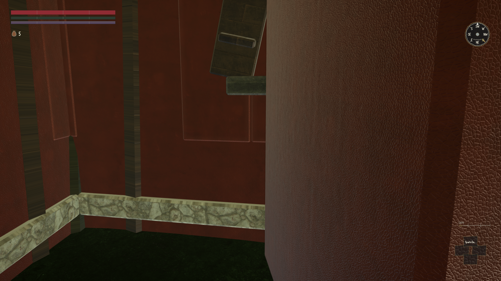
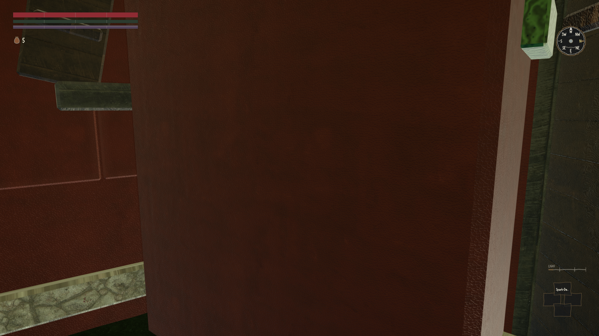
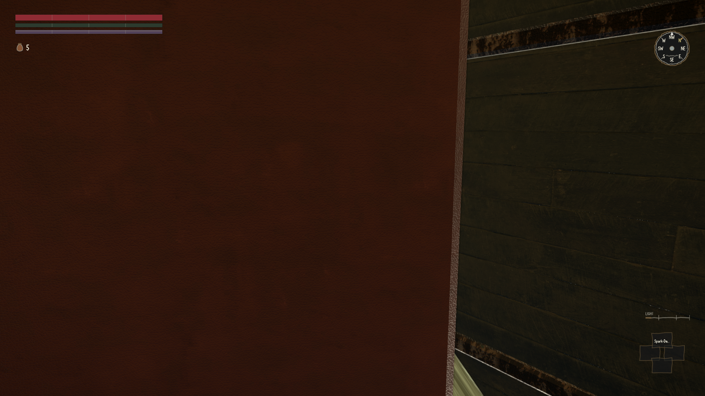
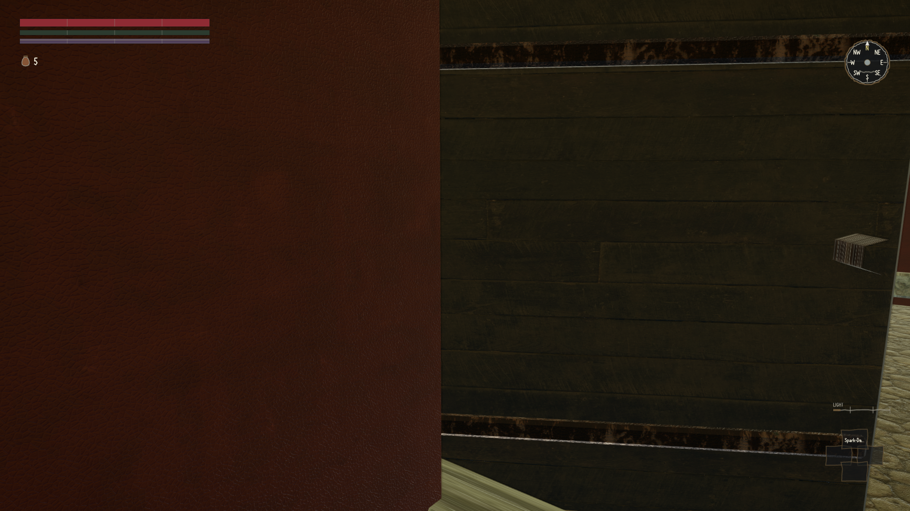
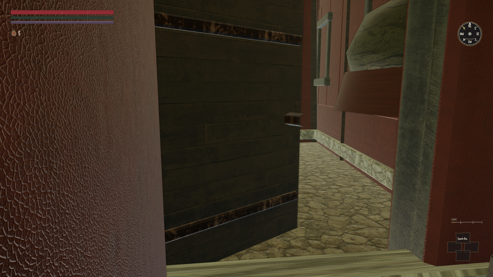
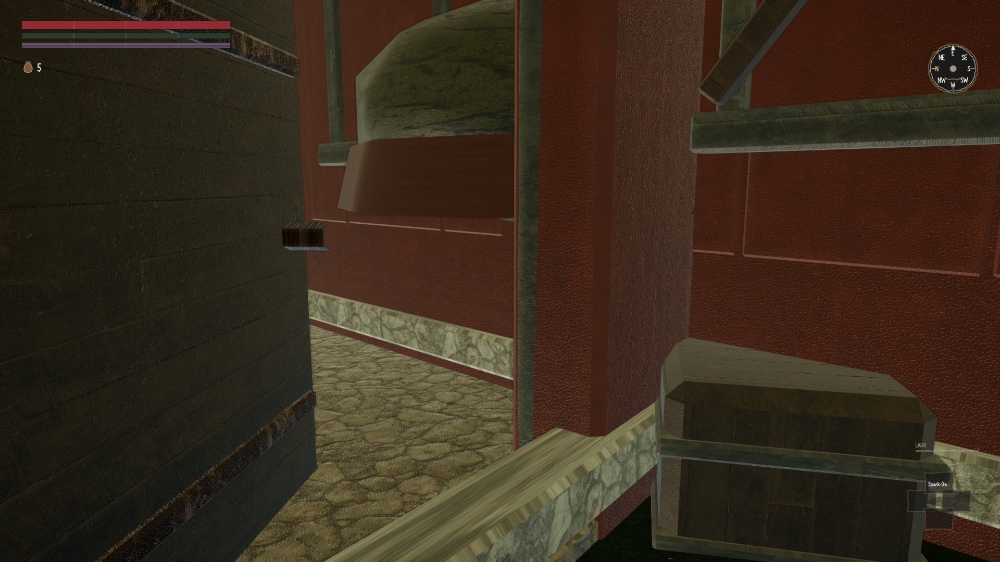
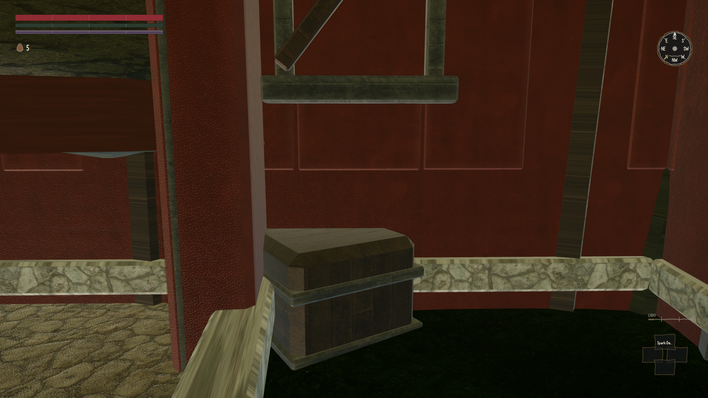
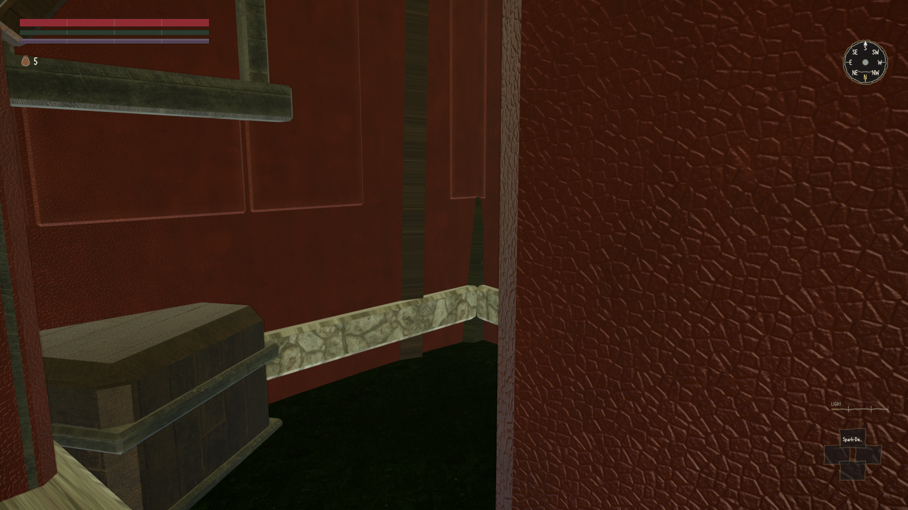
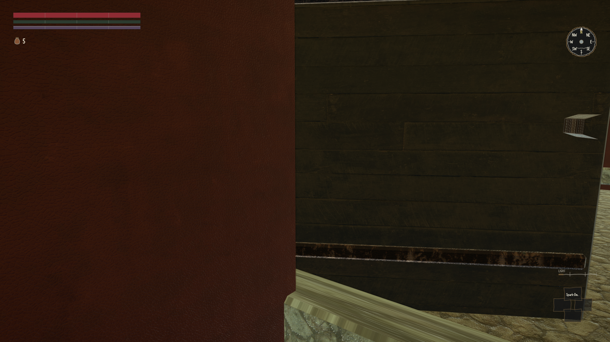
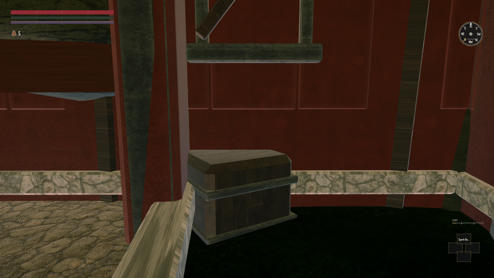
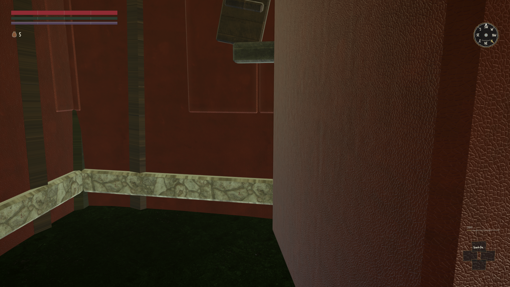